First voyage · 8 pages
The Three Little Planets
Three tiny worlds need a steady hand, a listening heart, and one very gentle bedtime crew.
The little library between stars
Choose a shelf, choose a book, cuddle in, and turn the galaxy one illustrated page at a time.
Collection one · 3 books
Juliet leads a gentle bedtime crew through bright planets, curious clues, and brave rescues.
First voyage · 8 pages
Three tiny worlds need a steady hand, a listening heart, and one very gentle bedtime crew.
Second voyage · 8 pages
A round clue, a storm of sprinkles, and a cozy explorer growing into a proper space-pirate captain.
Third voyage · 8 pages
A patient treasure hunt uncovers a bottle of gentle light and a reminder that the finest treasures help us feel our best.
Collection two · 3 books
Every completed Starbeard-and-Uni book will join this shelf in reading order.
The Adventures of Starbeard and Uni · 21 pages
A missing note leads the crew through a singing forest to a treasure that can only be given.
The Adventures of Starbeard and Uni · 12 pages
A missing purple sock turns laundry day into a quiet galactic mystery,and an adventure exactly big enough for today.
The Adventures of Starbeard and Uni · 10 pages
Frozen treasure, new friends, and a golden maze reveal what an explorer carries home.
Collection three · 4 books
Discover how old friends first met, and follow new adventures beyond the familiar stars.
12 complete chapters + cover
A little home in an ancient warrior-pigeon cave, a family map, and an Airforce rescue that helps Pigeon find his own place in the sky.
12 complete chapters + cover
Pigeon and his friends join the Galactic Pigean Space Corps, learn a very surprising new tactic, and guide a stranded convoy through a dangerous blockade.
12 complete chapters + cover
A courageous commander, a flock of indispensable friends, and some spectacular space poop help turn the Great War and earn an extraordinarily important title.
A friendship begins · 24 story pages + cover
A frightened magical AI cup, a giant ancient crystal, and the adventure that turned two unlikely explorers into lifelong friends.
Ready to read with Heart.
Background music is paused.

Tonight’s read-together adventure
Juliet, Uni, and Starbeard follow a magical map hidden in his beard through three little planets. Each world holds one piece of a starlit path that can lead them safely home.

One starry almost-bedtime…
Starbeard heard a tiny chime under his chin. When he combed his beard, out floated a ribbon of starlight with three little planets painted across it. The planets glowed, but every path between them had gone dark.
Juliet tied her red cape to the blanket rocket as a sail. Uni warmed the patchwork engine with a golden spark. On the map, the first planet blinked three times, like a porch light calling friends home.
“Three worlds are calling,” Juliet said. “Let’s answer together.”

Little Planet One · Tumble-Turn
Bubble trees drifted above their roots. Mossy paths curled along the sky. Even the raindrops rose from puddles and disappeared into the stars. The first silver path in Starbeard’s beard-map flickered as if it might vanish.
High in a twisting branch, a baby pearl-bubble had bounced out of its nest. It spun farther away each time the little planet rolled.
“Hold hands,” Juliet said. “If the planet will not choose an up, we will make our own.”

The first path
Uni pressed her hooves against the rocket and anchored it with a warm beam. Starbeard looped a rope of stars around his waist. Juliet held the other end, opened her cape, and swung through the floating forest.
On the count of three, she caught the giggling pearl-bubble and tucked it into its branch-nest. The bubble trees settled around their roots, and the whole planet turned right-side up.
Inside Starbeard’s beard, the first silver path shone bright and pointed to the next little world.

Little Planet Two · Luma Bloom
The map led them to Luma Bloom, where bell flowers should have rung each evening to grow a bridge of light. Tonight every flower hung silent, and the crew could not cross the dark valley to the map’s next star.
Juliet knelt beside a tiny seed humming under a leaf. She hummed the same note back. Uni added a silver harmony, Starbeard added a jingling bass, and one by one the bell flowers lifted their heads. A bridge bloomed across the valley, and the second path lit beside the first.
“You had the song all along,” Juliet told the seed. “We only needed to listen.”

Little Planet Three · Naptune
Two bright paths now curled through Starbeard’s beard-map. The last one led to Naptune, where every sleepy star was yawning except the crescent moon. Naptune’s golden dream seed had blown into a maze of drifting cloud rings.
Without the seed, the moon could not sleep. Without the moon’s dream, the map could not reveal the way home. Juliet and Uni floated after the warm glow while Starbeard anchored their rope to the rocket.
“We got this far together,” Juliet said. “We finish together.”

The third path
Uni lit the safest ring and Starbeard kept the rope steady as the clouds rolled like slow waves. Juliet wrapped the seed in her cape so its golden dreams would not spill into space.
She placed it beside the moon. Naptune gave one enormous, peaceful yawn. The sleepy stars tucked themselves into the clouds, and the final silver path shone inside Starbeard’s beard.
All three paths joined into one bright trail pointing home.

Home again
At dawn, the map guided their patchwork rocket back to the blanket fort. They planted a tiny gift from Naptune beside the porch, and it opened into a starflower with three glowing petals, one for each world they had helped.
Starbeard carefully curled the magic map back into his beard, where it could sleep until another world called. Juliet tucked her cape around Uni and watched Tumble-Turn, Luma Bloom, and Naptune shine together in the morning sky.
Three little planets were safe, and three explorers were already dreaming of where the map might lead next.

A marmalade-map adventure
When a golden map swirls out of Juliet’s breakfast, she, Uni, and Starbeard follow it past the Sprinkle Belt to a silent doughnut planet. There, a tiny moon needs a brave, gentle rescue.

Breakfast aboard the patchwork star-sloop
Juliet drew one slow circle through the orange-gold marmalade. Her spoon began to tingle. Then the sticky swirl lifted from her toast and opened above the breakfast table as a shining map shaped like a ring.
Inside the ring, a tiny golden moon blinked once, twice, and disappeared beneath a raspberry-colored storm. A trail of glowing crumbs ran from their porthole into the stars.
“Someone tucked a call for help inside our breakfast,” Uni whispered.

Starbeard’s captain look · The sash and compass
The map curled into Starbeard’s empty brass compass without spilling a drop. Juliet matched its crumb-trail to the constellations while Uni warmed the patchwork engine with one gentle beam.
Starbeard tied a midnight-blue sash over his cardigan. His new captain voice squeaked on the first try, so he breathed, smiled at his crew, and tried again.
“Course set for the round horizon,” he said. “Together.”

Starbeard’s captain look · The long coat
The glowing crumbs led straight into tumbling crystal sprinkles, purple, blue, orange, and green. Each one spun like a tiny log in a very sparkly river.
Juliet kept both hands steady on the wheel. Uni nudged the widest sprinkles aside. Starbeard listened to them and called the safe turns. As he did, his cardigan stretched into a long starry coat with bright brass buttons.
“Port past the purple! Now starboard around the blue!”

Doughnut Planet · Rosegold Ring
They sailed out of the last sparkle and found glaze seas, icing clouds, and forests of chiming sugar trees. But the seas did not move. The trees did not sing. Even the moonlets stared worriedly into the empty middle.
The marmalade map brightened. It showed the missing golden moon trapped below, tangled in a sticky raspberry storm. Without the moon’s pull, the whole round world had gone still.
“The map did not lead us to treasure,” Juliet said. “It led us to a neighbor.”

Starbeard’s captain look · The starry hat
The crew landed on the inner rim, where the wind rushed around and around the enormous hollow sky. Far below, the little moon bobbed inside jam-colored clouds and called with a bell-small peep.
Juliet opened her cape into a sail. Uni aimed her horn through the safest gap. Starbeard wrapped their shining rope around himself and a sturdy sugar-crystal root. A wide starry captain hat appeared atop his curls.
“Ready when you are, Captain,” Juliet said. “Ready because you are,” he answered.

One cape, one horn, one steady rope
Uni’s warm beam loosened the storm. Juliet caught the moon in her cape, but its proper orbit was too dark to see. Then she raised the marmalade compass. The golden map sprang open once more, drawing a bright circle through the sky.
Starbeard eased the rope, Juliet gave the cape one careful swing, and the moon rolled onto the glowing path. Glaze seas rushed, sprinkle trees rang, and golden sparks braided themselves through Starbeard’s beard.
The moon completed one bright orbit, and the whole Doughnut Planet woke up.

A galaxy of round horizons
The grateful moon pressed one crumb-shaped star into the brass compass. Around it appeared a trail of new rings: blueberry, peach-gold, lavender, and one speckled like birthday cake.
Juliet tucked the compass beside the marmalade jar. Uni curled up near the warm engine. Starbeard, now wearing sash, coat, captain hat, and a beard full of starlight, turned the ship toward the first unknown ring.
“Good thing,” he said, “this crew packed plenty of toast.”
The Adventures of Starbeard and Uni · Book One
Far, far away, beyond the Moon and beyond the planets, where the stars sparkle like tiny diamonds scattered across a great black sea, sailed a very unusual pirate ship.
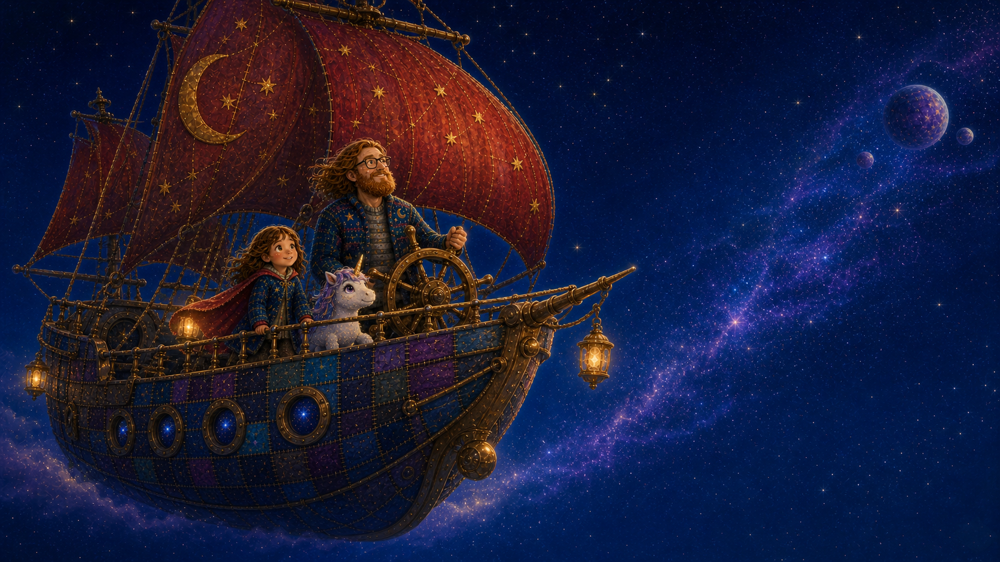
Far beyond the Moon
Its silver sails caught the light of distant stars. Its engines purred as softly as a sleeping kitten. And painted proudly upon its side were the words: The Cosmic Wanderer.
At the helm stood Admiral Starbeard.
Starbeard was a pirate captain,but not the sort of pirate who stole things. Oh, no. Starbeard searched for lost treasures, explored forgotten worlds, helped people in trouble, and occasionally ate far too many pancakes.
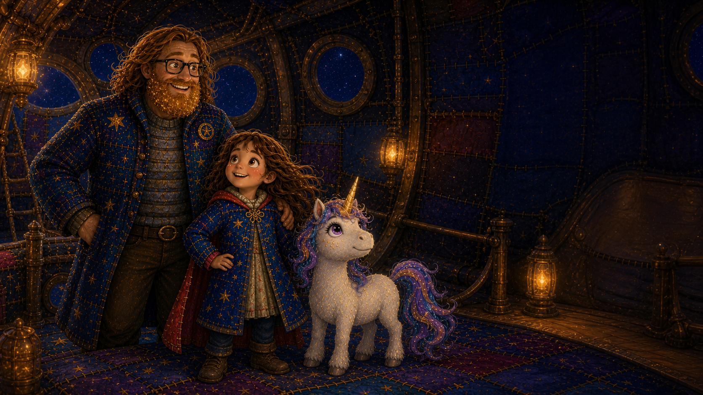
Aboard The Cosmic Wanderer
His great beard was sprinkled with tiny points of light that shimmered like stars whenever he laughed. And Starbeard laughed often.
“HA-HA! Another beautiful night for an adventure!”
Beside him stood his very best friend, Uni. Uni was a magical unicorn with a snowy white coat, a flowing mane that shimmered with every color of the rainbow, and a golden horn that glowed whenever magic was near.
And traveling with them was their youngest explorer: Juliet.
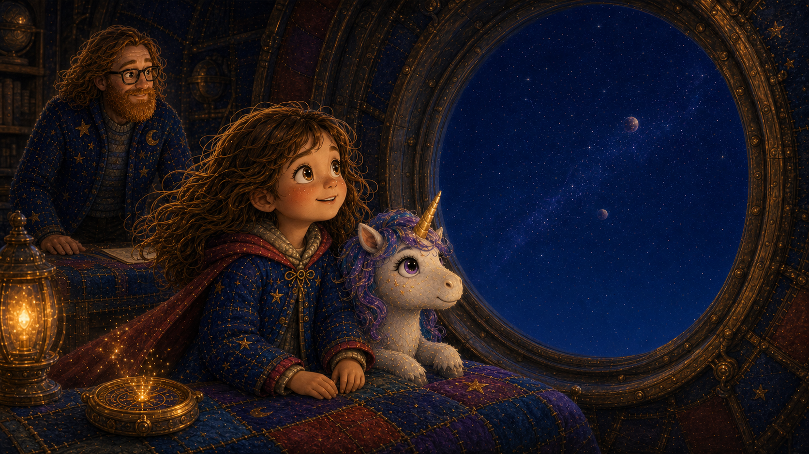
Their youngest explorer
She loved discovering new planets. She loved finding treasure. But most of all, she loved traveling through the galaxy with Starbeard and Uni.
One quiet evening, Juliet was sitting beside Uni and watching the stars drift past the window when something began to blink on Starbeard’s treasure compass.
Blink. Blink. BLINK!
Starbeard raised one enormous eyebrow. “Well, shiver me satellites.” Juliet hurried over. “What is it?” Starbeard held up the compass.
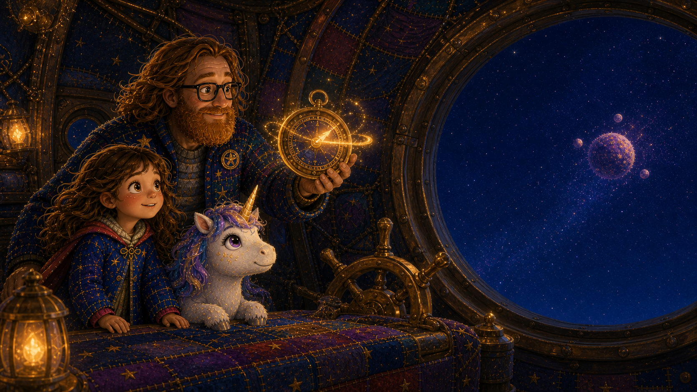
A golden needle
Instead of pointing north, its golden needle was spinning around and around. Then,PING! It stopped. The needle pointed toward a tiny purple planet surrounded by three glowing moons.
Uni’s horn began to sparkle. “That,” said Uni softly, “is no ordinary planet.” Starbeard grinned. “Then I suppose we’d better go have an extraordinary look.”
And with a pull of a lever,WHOOSH!
The Cosmic Wanderer sailed toward the mysterious world.
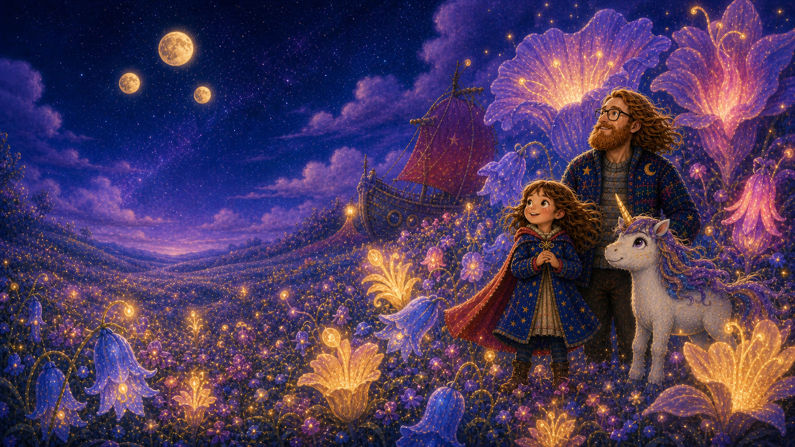
The Planet of Flowers
As they descended through lavender clouds, Juliet pressed her nose against the window. “Whoa…” Flowers covered the entire planet.
There were little flowers no bigger than buttons. There were flowers as tall as trees. There were enormous flowers whose petals stretched wider than The Cosmic Wanderer itself.
But something was strange. Every flower was closed. Starbeard landed the ship in a quiet meadow. The three moons rose into the sky.
And suddenly,DING. One flower opened. Then another. DONG. Then another. TING! TONG! DING-DING!
Thousands of flowers slowly opened beneath the moonlight.
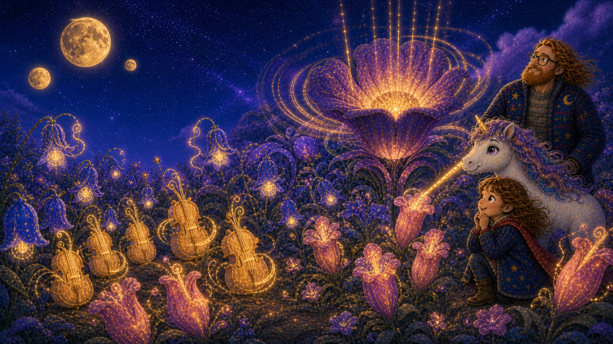
Under the three moons
And each flower made a musical note. Juliet’s eyes grew wide. “The flowers are singing!” They certainly were.
Blue flowers chimed like little bells. Golden flowers hummed like cellos. Pink flowers whistled like flutes. And enormous purple flowers made deep, gentle sounds: BOOOOOOM.
Starbeard stroked his beard. “I’ve heard of singing in the shower, but singing in the flower? That’s new.” Juliet giggled.
Then they heard another sound. Someone was crying.
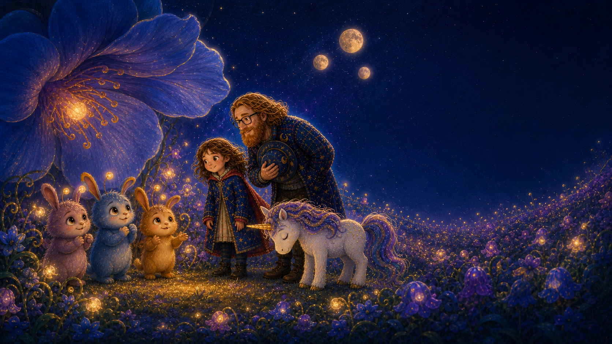
The Missing Note
Behind a giant blue blossom sat three tiny creatures. They had round bodies, long ears, and little antennae that bounced whenever they spoke.
“Hello,” said Juliet. The creatures looked up. “You came!” cried one. “The travelers from the stars!” “We hoped someone would!”
Starbeard removed his hat and bowed. “Admiral Starbeard, treasure hunter, explorer, pancake enthusiast, and pirate captain at your service.” Uni bowed. “Uni.” Juliet smiled. “And I’m Juliet.”
The little creatures introduced themselves as Melodians, the caretakers of the Moonlit Blossom Planet.
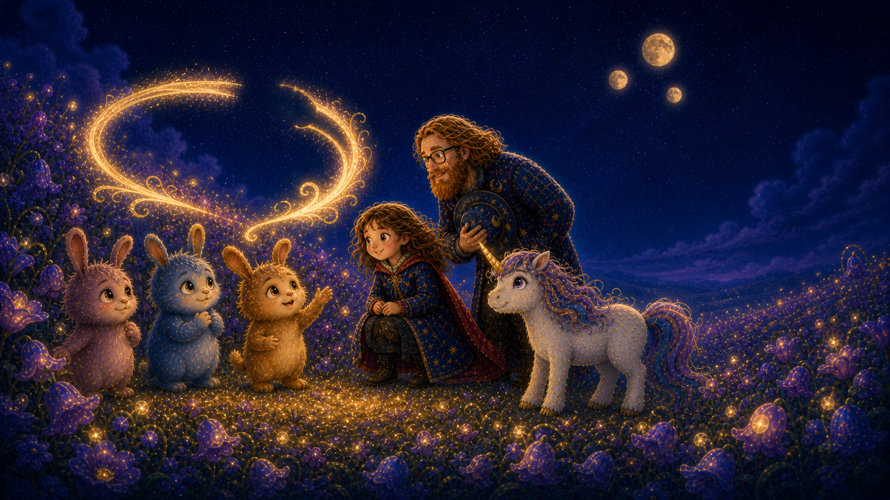
The Moonlight Song
But something was wrong. Every night, explained the eldest Melodian, the flowers sang the Moonlight Song. The song helped the flowers sleep until the following evening.
But tonight, one note was missing. Without it, the song could never finish. And without the finished song, the flowers could not sleep.
Juliet looked across the meadow. Thousands of flowers were swaying restlessly.
“We’ll help,” she said. Starbeard smiled. “That’s my kind of treasure hunt.”
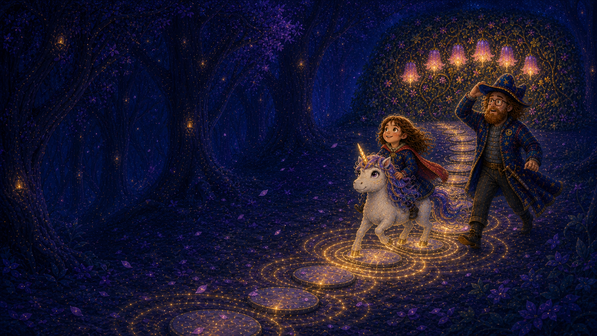
Into the Singing Forest
The missing note belonged to the legendary First Flower, hidden somewhere deep inside the Singing Forest. So Juliet climbed onto Uni’s back. Starbeard adjusted his enormous hat. And together they followed a trail of glowing petals into the woods.
The deeper they traveled, the stranger the forest became. Whenever Juliet stepped on a silver stone,TING! Whenever Starbeard stepped on one,TONG! And when Uni stepped on one,TWINKLE-TWINKLE-TING!
Soon Juliet realized something. “It’s a song!” The stones formed a musical path. But ahead stood a wall of enormous vines. On the vines were five glowing flowers.
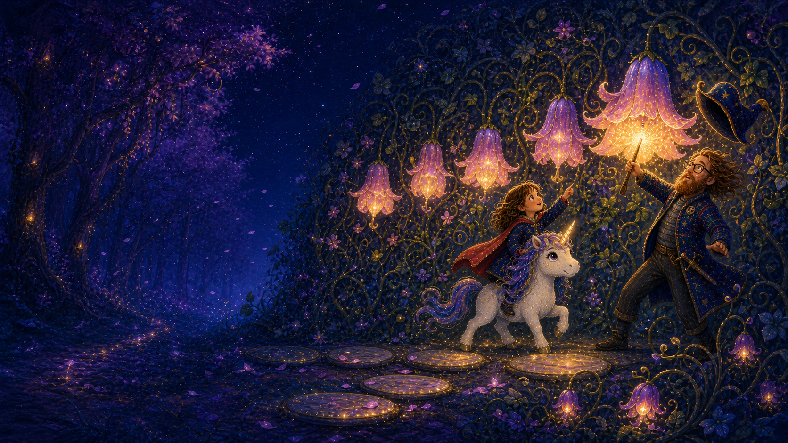
Five glowing flowers
Starbeard pushed. Nothing happened. Uni tried magic. Nothing happened. Juliet looked at the flowers. “Maybe we have to play them.”
She touched the first. Ding. Uni touched another. Dong. Starbeard carefully poked the largest. BWOOOOONG! His hat flew off. Juliet burst out laughing. Starbeard picked up his hat. “I meant to do that.”
Together they tried again. Ding. Ding. Dong. Ding. The vines began to wiggle. They played the pattern once more. Ding. Ding. Dong. Ding! The vines lifted away.
Starbeard pointed dramatically forward. “Crew! The path is open!” And onward they went.
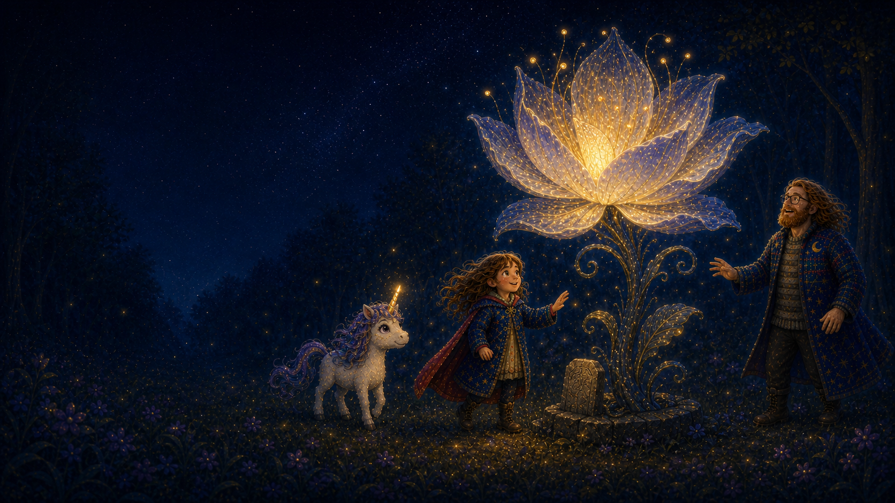
The First Flower
At last, they reached a clearing. Everything became quiet. No bells. No humming. No whistles. Only the soft night breeze.
In the center of the clearing stood one enormous flower. Its petals were silver and gold. Tiny lights drifted around it like fireflies. Uni’s horn glowed warmly. “The First Flower,” she whispered.
Juliet slowly walked toward it. The flower opened. Inside was a single glowing petal. Starbeard reached toward it. But Juliet noticed something carved into a stone beneath the flower:
The greatest treasure cannot be taken. It can only be given.
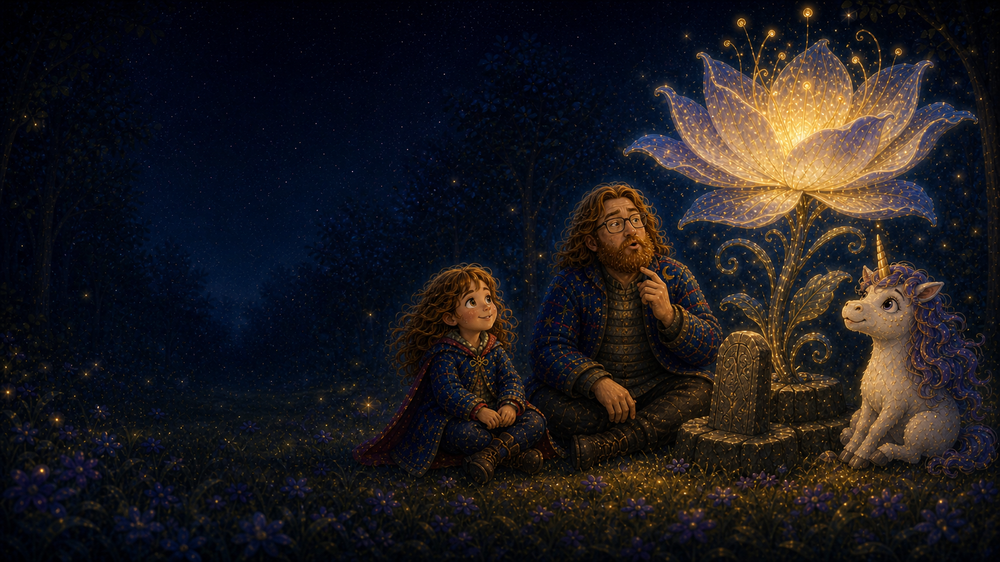
A treasure that must be given
Starbeard stopped. “Hmmm.” Uni smiled. “I don't think we're supposed to take the petal.” “Then how do we get the missing note?” Juliet asked.
The three friends sat quietly. They listened. The wind moved through the grass. The leaves rustled. Somewhere far away, the flowers continued their unfinished song.
Then Juliet understood. “Maybe it wants us to sing.” Starbeard blinked. “Me?” Juliet nodded. Starbeard cleared his throat. “Arrrrr…” Uni laughed. “That isn't singing.”
“I'm warming up.”
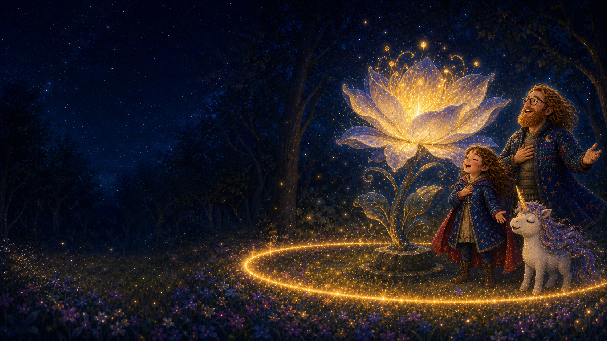
Three different voices
So Juliet began with one gentle note. Uni joined her. Then Starbeard added his deep, rumbling voice. Their voices weren't exactly the same. They weren't supposed to be.
Juliet's voice was bright. Uni's was soft and clear. Starbeard's was deep and warm. But together… they made something beautiful.
The First Flower began to glow. Brighter. And brighter. And brighter. Then,DIIIIIIIIING.
One perfect note rang across the planet. They had found it. Except it wasn't something they could put inside a treasure chest. It was something they had made together.
The Moonlight Song
The note raced through the Singing Forest. Every flower it passed joined the melody. Ding… Dong… Hummmmmm… Ting-a-ling…
Across valleys. Across mountains. Across sparkling rivers. Across fields filled with millions of moonlit blossoms. The entire planet began to sing.
Starbeard, Uni, and Juliet hurried back toward the meadow. The Melodians were dancing. The flowers swayed gently beneath the three moons.
And now the song became softer. And slower. And quieter. The enormous flowers began folding their petals.
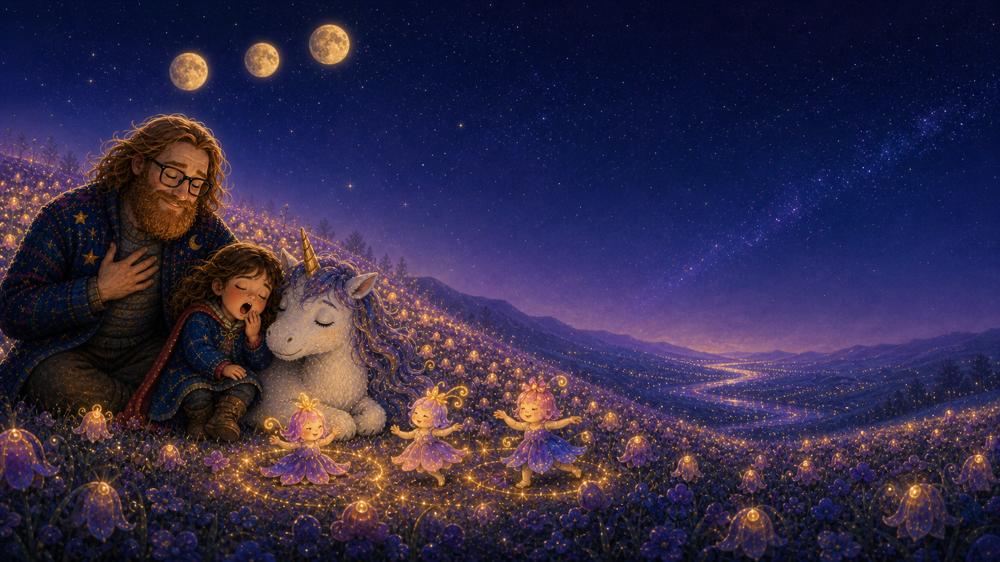
Softly · Slowly · Quietly
The little flowers curled into tiny balls. The glowing vines dimmed their lights. Even the three moons seemed to shine a little more gently. The Moonlight Song wasn't only a song. It was a lullaby.
Juliet yawned. Starbeard noticed. “Uh-oh.” “What?” Juliet asked sleepily. “I recognize that.” “Recognize what?” “The Extremely Dangerous Galactic Yawn.” Juliet giggled. Then she yawned again.
Uni lowered herself beside her. Juliet leaned against Uni's warm side. Around them, the flowers whispered their sleepy song.
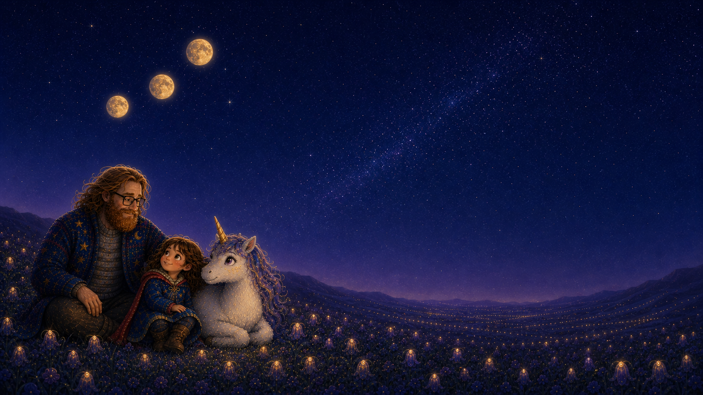
Beneath the three moons
Starbeard sat beside them. For once, even the great Admiral Starbeard was quiet. Above them stretched the whole enormous universe. Millions upon millions of stars.
So many places they had never visited. So many friends they had not met yet. So many treasures waiting to be discovered.
Juliet looked at Starbeard. “Was the song the treasure?” Starbeard thought for a moment. “I reckon it was part of it.” “What's the other part?”
Starbeard looked at Uni. Uni looked at Juliet. “The people you find while you're searching,” Uni said.
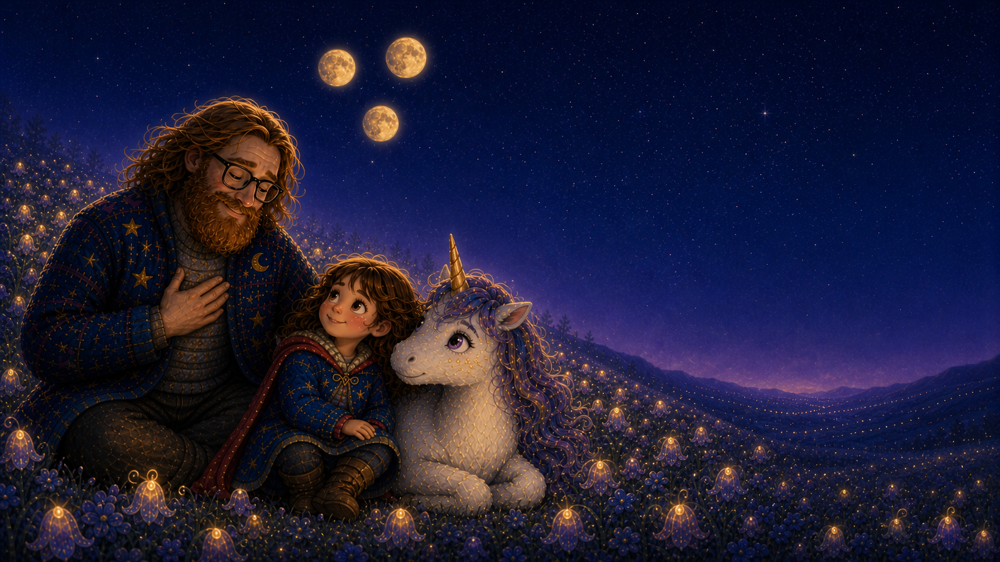
The greatest treasure
Starbeard nodded. “Gold can be lost. Jewels can disappear. But a good friend?” He smiled. “That's treasure you carry right here.” He gently tapped his chest. Juliet smiled. The flowers continued their lullaby.
Softly now, the starlights gleam,
Silver ships sail into dream.
Moonflowers close, the night winds sigh,
Three moons wander through the sky.
Rest your head and close your eyes,
Dream of distant, starry skies.
Wherever tomorrow's journey may be,
There's always another world to see.
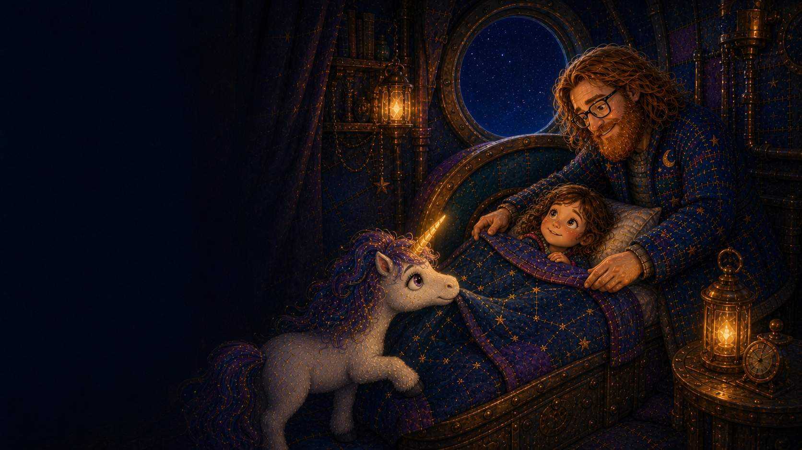
Home Among the Stars
Eventually, Starbeard carried a very sleepy Juliet back aboard The Cosmic Wanderer. Uni walked beside them, her horn glowing just enough to light the way.
Starbeard tucked Juliet into her little bunk. It had a round window beside it, so she could watch the stars. Uni pulled the blanket up beneath Juliet's chin.
“Are we going home now?” Juliet murmured. Starbeard smiled. “The Cosmic Wanderer is our home.”
Juliet thought about that.
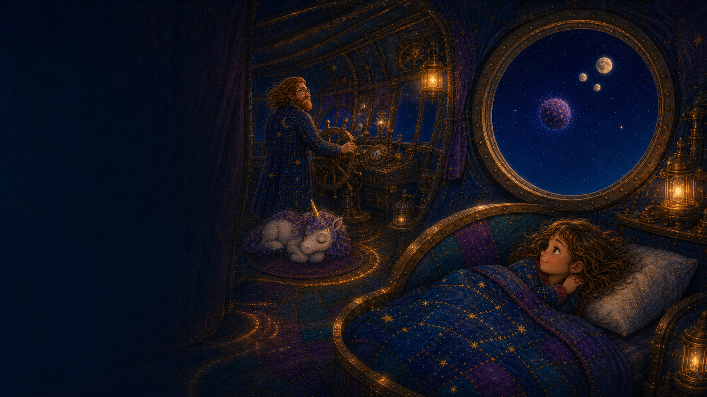
Beyond the round window
Outside her window, the Moonlit Blossom Planet grew smaller and smaller. The flowers below were sleeping. The three moons shone peacefully. And somewhere among those flowers were new friends who would remember them whenever the Moonlight Song played.
Starbeard returned to the helm. Uni curled up nearby. The engines made their soft nighttime hum. Hmmmmmmmmmmm…
Starbeard turned down the cabin lights. The ship sailed gently through the darkness. Past one star. Then another. Then another.
Juliet's eyes became heavier. She could hear Uni breathing nearby. She could hear the quiet engines.
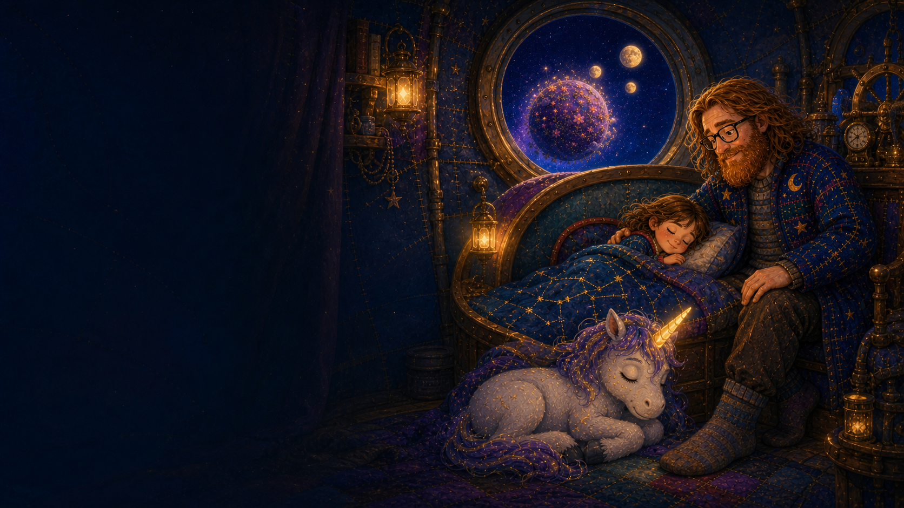
Under a blanket of stars
And she could just barely hear Starbeard humming the Moonlight Song from the bridge. Softly now, the starlights gleam… Juliet closed her eyes.
Tomorrow there would be another planet. Perhaps there would be treasure. Perhaps there would be a mystery. Perhaps someone somewhere among the stars would need their help. But that was tomorrow.
Tonight, the galaxy was peaceful. The Cosmic Wanderer sailed onward beneath a blanket of stars. Starbeard watched over his crew. Uni's magic glimmered softly in the darkness.
And Juliet slept. Safe. Warm. Loved. And dreaming of wherever their adventures took them next.
The End
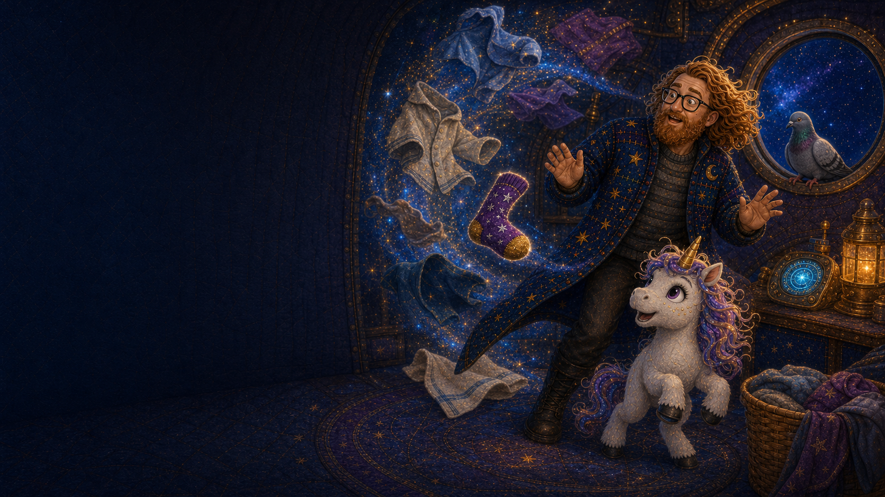
The Adventures of Starbeard and Uni · Book Two
A missing purple sock leads Uni and Starbeard through silver clues, a laundry-room wormhole, and one adventure exactly big enough for today.
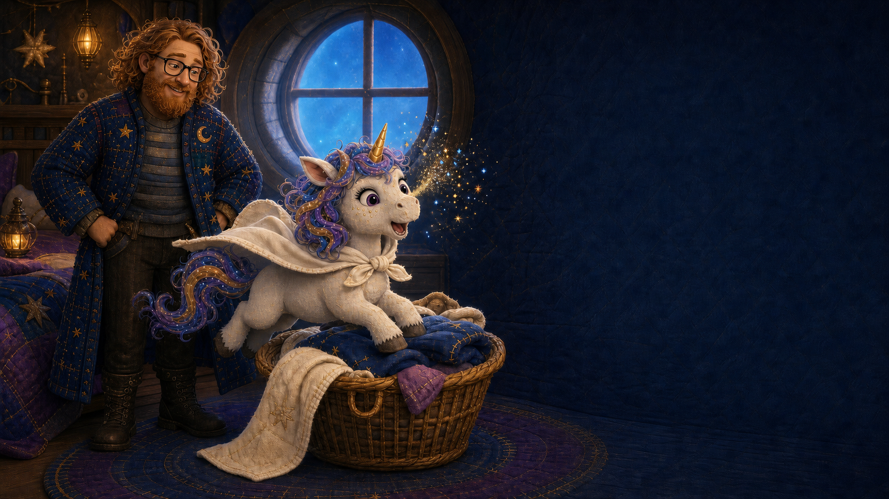
The morning after
The next morning, aboard The Starlight Wanderer, Uni opened one eye. Then the other. Then all at once she sprang from beneath her blanket and shouted: “I AM COMPLETELY BETTER!”
She leaped from the couch. She spun through the air. She landed directly in a basket of clean laundry. Then she sneezed.
Starbeard looked at her. Uni looked back. “Victory sneeze,” she explained. “Aye,” said Starbeard. “Naturally.”
Uni climbed from the basket wearing a pillowcase like a cape. Her throat was less scratchy. Her nose was less stuffy. Her tummy had stopped feeling strange. And her hoof only itched a tiny bit.
“I am ready for the biggest adventure in the entire galaxy,” she announced. Starbeard nodded gravely. “Excellent. Our first mission is laundry.”
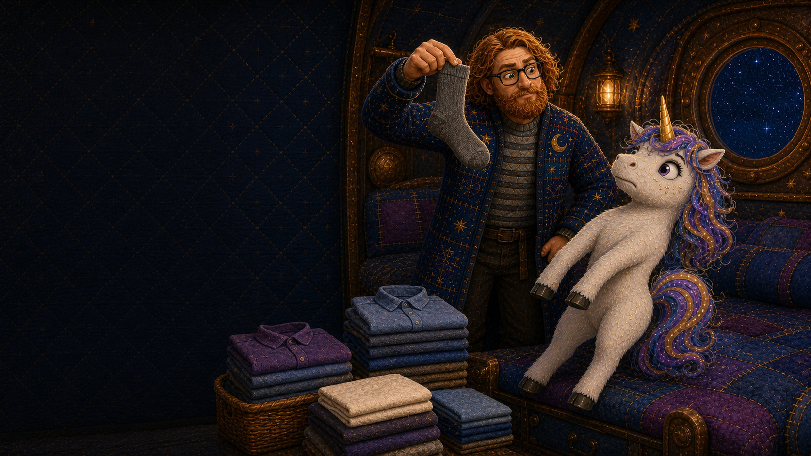
Mission number one
Uni stared at him. “Laundry is not an adventure.”
“Spoken like someone who has never faced the Folding Fields of Flannel Seven.”
“I want treasure.” “Clean socks are treasure.” “I want danger.”
Starbeard held up one of his socks. Uni leaned away. “Fine,” she said. “Laundry is dangerous.”
Together they sorted the basket. Shirts in one pile. Towels in another. Starbeard’s trousers in a pile that immediately fell over.
At last they reached Uni’s favorite socks. They were purple, with tiny silver stars and golden toes.
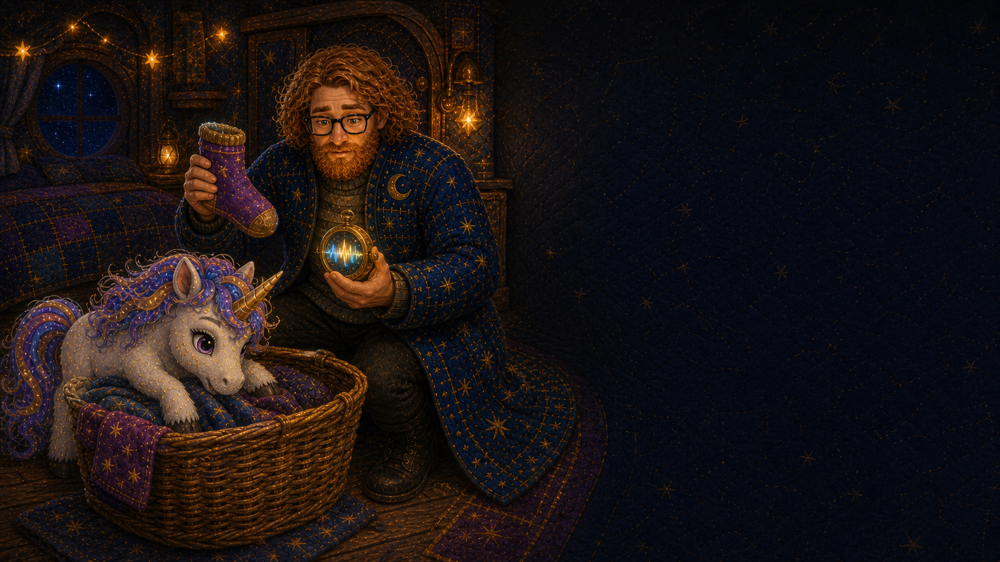
A sock-related irregularity
Starbeard held up the first sock. “One royal hoof-warmer.” Uni searched the basket. She moved a towel. She lifted a shirt. She shook the pillowcase off her head. Nothing. “Where’s the other one?” she asked.
They searched again. Slowly. Carefully. Twice. The second sock was gone. Uni’s eyes grew wide.
“Starbeard?” “Aye?” “You once told me you escaped the Great Galactic Sock Thief of Sector Nine.” Starbeard became very still. “I did.” “Did you catch him?” “No.” “Then he could still be out there.”
Starbeard looked toward the door. The door looked back. Or it would have, if doors had eyes.
The communicator on the table crackled. “Captain Starbeard,” came Starblaze’s voice. “My instruments have detected a sock-related irregularity.” Uni grabbed the communicator. “How irregular?” “One-sock irregular.” Uni gasped.
Starbeard stroked his beard. “Crew, we have a mystery.” He stood dramatically and pointed toward the ceiling. “We shall begin Operation: Locate and Return One Slightly Damp Hoof-Warmer!”
Uni frowned. “That is the worst mission name in the galaxy.” “Have ye a better one?” Uni raised the lone sock like a flag. “Operation Great Galactic Sock Caper.” Starblaze answered at once. “Much better.”
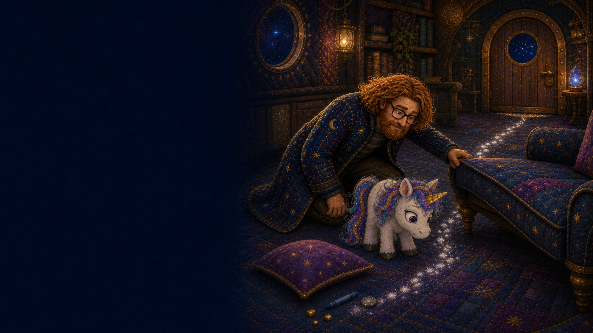
Every possibility
The investigation began inside the hotel room,or, depending on how much imagination one happened to possess, inside the laundry deck of The Starlight Wanderer.
They searched beneath the couch. They found three crumbs, a blue crayon, and a coin from a distant planet that looked suspiciously like a quarter. They searched behind the chair. Nothing. They searched inside Starbeard’s hat. Also nothing.
“I told you,” said Uni. “Socks don’t hide in hats.” “Space pirates must investigate every possibility.”
They questioned a suspicious pillow. “Where were you between bedtime and breakfast?” Uni demanded. The pillow said nothing. “Very suspicious,” said Starbeard.
Then Uni noticed something beside the door. A tiny piece of silver fluff. And beyond it... Another. And another. A trail.
“The Sock Thief,” Uni whispered.
Before leaving, Uni put on both horseshoes. Then she checked them twice. Hotel carpet had lost her trust.
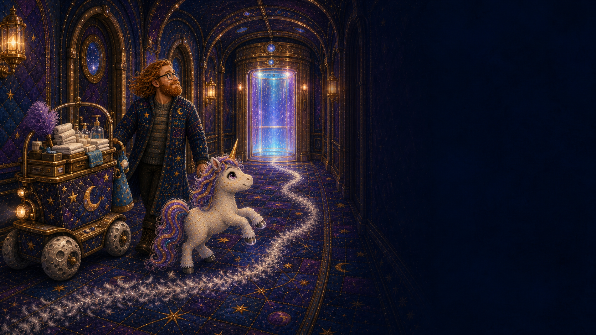
Beyond the hotel room
Starbeard brought the laundry basket. Uni carried the communicator. Together they followed the silver trail into the Celestial Passageway.
It looked very much like an ordinary hotel hallway. But ordinary hotel hallways do not lead to galactic sock thieves. Probably.
The trail curved past a housekeeping cart. Uni stopped. “Moon rover.” “Aye.”
It continued to the elevator. The doors slid open with a ding. “Teleportation chamber,” said Starbeard.
They stepped inside. The doors closed. Soft music began playing. Uni listened. “Why does teleportation have such boring music?” “Safety regulation.” “That doesn’t make sense.” “Then it must be an official regulation.”
The chamber carried them down one floor. Ding.
The silver trail led straight to the hotel laundry room.
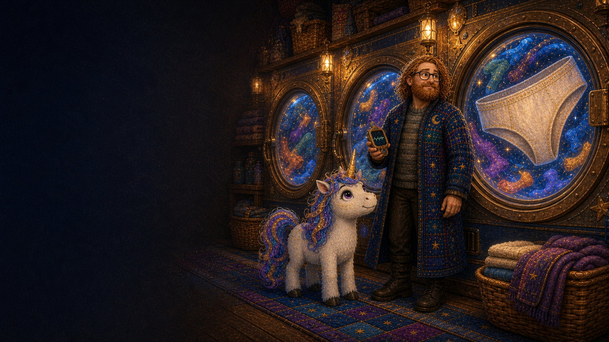
The laundry deck
Inside, great round machines spun behind glass doors. Shirts tumbled. Towels twisted. One pair of enormous underpants floated past a window like a ghost.
Uni pointed. “The Wormhole of Warm Underwear.” “A fearsome place,” said Starbeard.
Starblaze’s voice crackled from the communicator. “Strange fact: washing machines do not actually eat socks.”
“That is exactly what a washing machine would want us to believe,” said Starbeard.
“Also,” Starblaze continued, “small clothes can hide inside larger clothes. And dry socks sometimes cling to other things because of static electricity.” Uni narrowed her eyes at the machines. “Or because of thieves.” “Also possible,” Starblaze admitted.
They searched around the folding table. Behind the laundry basket. Beside the quiet machines.
Starbeard made one rule perfectly clear: No pirate, unicorn, space explorer, or anyone else ever climbs inside a washing machine or dryer. Even during an emergency. Especially during an emergency.
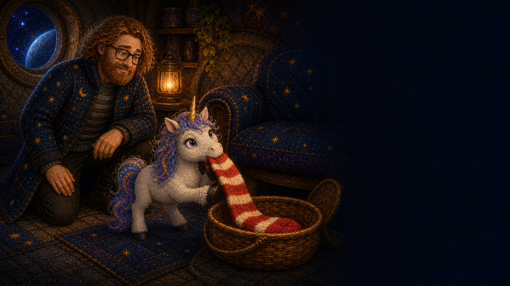
A successful rescue
Beneath a chair, Uni spotted a sock. “FOUND IT!” She reached down and pulled it free.
It was red. It had white stripes. It was far too large for Uni.
“That’s not mine.” She dropped it into the basket. Then she looked at it again.
“Do you think someone is searching for this one too?” “Perhaps,” said Starbeard.
Uni smoothed the striped sock flat. “Then we should take it to the Lost-and-Found Planet.”
“First Mate’s Log,” said Starblaze. “One sock rescued. Wrong sock, but still a successful rescue.”
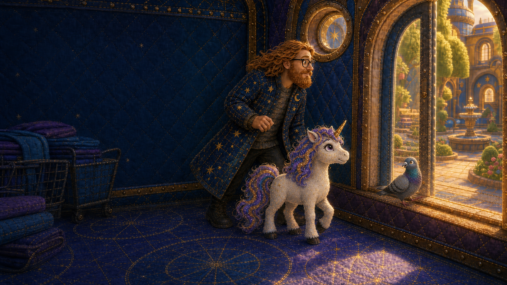
A familiar messenger
Their trail of silver fluff had ended. No purple sock. No thief. No treasure. Uni’s shoulders drooped.
Then something tapped against the laundry-room window. Tap. Tap-tap.
Outside stood a pigeon with his chest puffed out. Uni hurried to the glass. “Admiral Pigeon!”
The pigeon took three steps. Stopped. Looked backward. Took three more steps. Stopped. Looked backward again.
“He has a clue,” said Uni.
Starbeard and Uni followed him into the little courtyard, but not far. Uni was feeling better. She was not feeling invincible.
Adventures do not become less important when someone needs to go slowly.
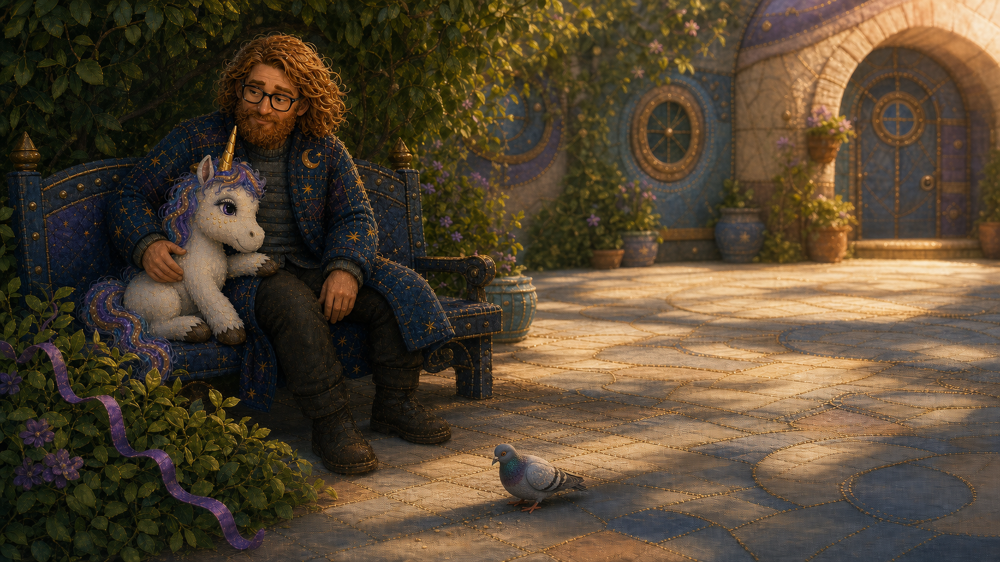
A quiet place to pause
Near a bush, something purple fluttered. Uni rushed toward it. “My sock!” But it was only a piece of party streamer caught on a branch.
Uni stopped. Her legs felt heavy. Her nose felt stuffy again. The enormous adventure she had planned for herself suddenly felt too enormous.
Starbeard sat beside her on a bench. For a little while, neither of them spoke. Admiral Pigeon pecked at the ground nearby.
At last Uni said, “I wanted to have a giant adventure.” “Aye.” “So everybody would know I’m not the sick unicorn anymore.” Starbeard nodded.
“Getting better is not something ye have to prove.” “But I’m tired again.” “Then ye are a tired unicorn who is getting better.”
“Can I still be an adventurer?” “Some of the finest adventurers I know take breaks.”
Uni leaned against him. “Do they complain dramatically?” “Constantly.” That made her smile.
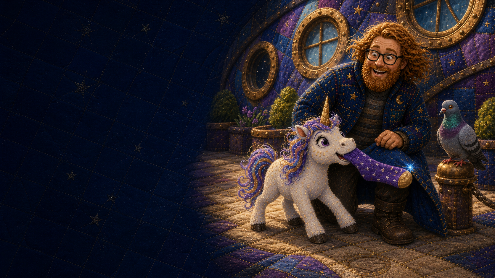
The thief unmasked
Across the courtyard, Admiral Pigeon stopped pecking. He stared at Starbeard. Then he tilted his head. And stared some more.
“Why is he looking at you?” asked Uni. “Perhaps he admires my hat.” “You’re not wearing your hat.” “Then perhaps he admires my beard.”
Uni followed the pigeon’s gaze. Behind Starbeard’s shoulder, something purple was peeking from his cape. A tiny golden toe.
Uni stood. Her eyes widened. She reached behind Starbeard and pulled. The missing sock came free with a tiny:
POP! A blue spark jumped between them.
“YOU HAD IT THE WHOLE TIME!” Starbeard twisted around. “I did?” “You’re the Sock Thief!” “I object to this accusation.” “You were carrying stolen sock property.”
The communicator crackled. “Static electricity,” Starblaze explained. “The sock clung to Starbeard’s cape after it came out of the dryer.”
Starbeard stroked his beard thoughtfully. “Static Cling,” he said. “First cousin to the Great Galactic Sock Thief of Sector Nine.”
Uni stared at him. Starbeard stared back. Then they both began to laugh. Admiral Pigeon puffed out his chest. “Coo,” he said. “A fine point,” Starbeard replied.
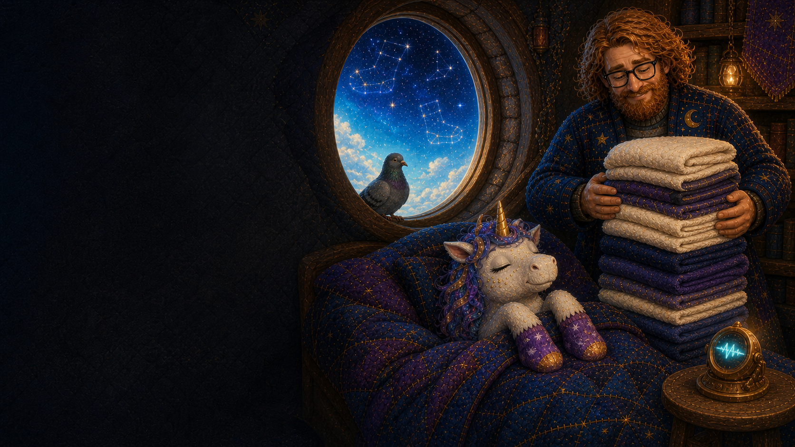
Back aboard The Starlight Wanderer
Back aboard The Starlight Wanderer, Uni delivered the striped sock to the Lost-and-Found Planet. Then she climbed beneath her blanket with both purple socks safely on her feet.
Starbeard folded the rest of the laundry. This was partly because he was captain. And partly because Uni had sentenced him to it.
“Starbeard?” “Aye?” “That adventure wasn’t very enormous.” “No.”
Uni thought about the silver trail. The teleportation chamber. The wrong sock waiting for its crew. Admiral Pigeon’s clue. And the purple sock that had traveled the whole galaxy on Starbeard’s back.
She smiled. “It was exactly big enough for today.” Starbeard smiled too.
From the communicator came Starblaze’s voice. “First Mate’s Log: missing sock recovered. Lost sock rescued. Captain suspiciously fuzzy.”
Starbeard frowned. “Please remove that last part from the official record.” “Request denied.”
Outside the window, Admiral Pigeon cooed. “What did he say?” asked Uni. Starbeard looked at the mountain of unfolded laundry. “Apparently, I still have to fold the towels.”
Uni closed her eyes. The Starlight Wanderer sailed onward beneath a bright Earth sky. Its crew had followed clues. They had rescued the wrong sock. They had unmasked a most unexpected criminal.
And Uni had learned that an adventure did not have to be the biggest in the galaxy. It only had to be big enough for the adventurer having it.
The end...
...until the next load of laundry.
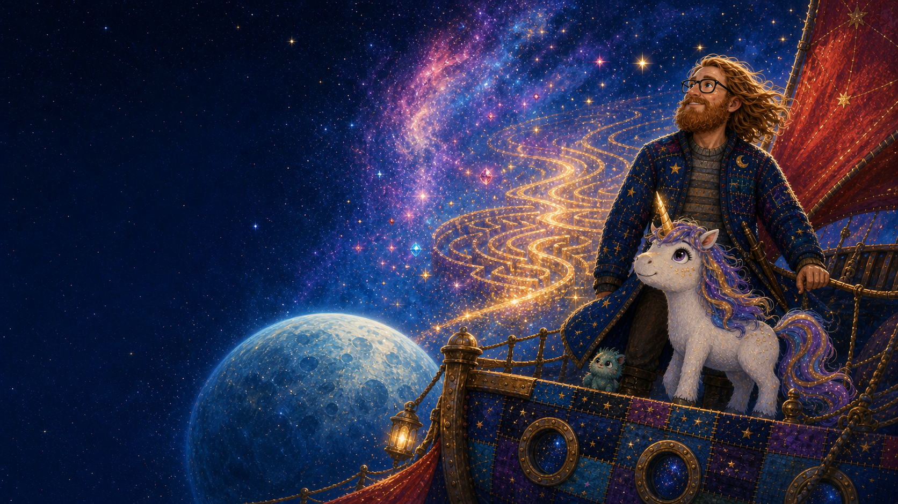
The Adventures of Starbeard and Uni · Book Three
Starbeard and his best friend Uni travel to frozen Pluto in search of diamonds and rubies. But beyond the treasure wait new friends, a doorway in space, and a golden maze filled with memories.
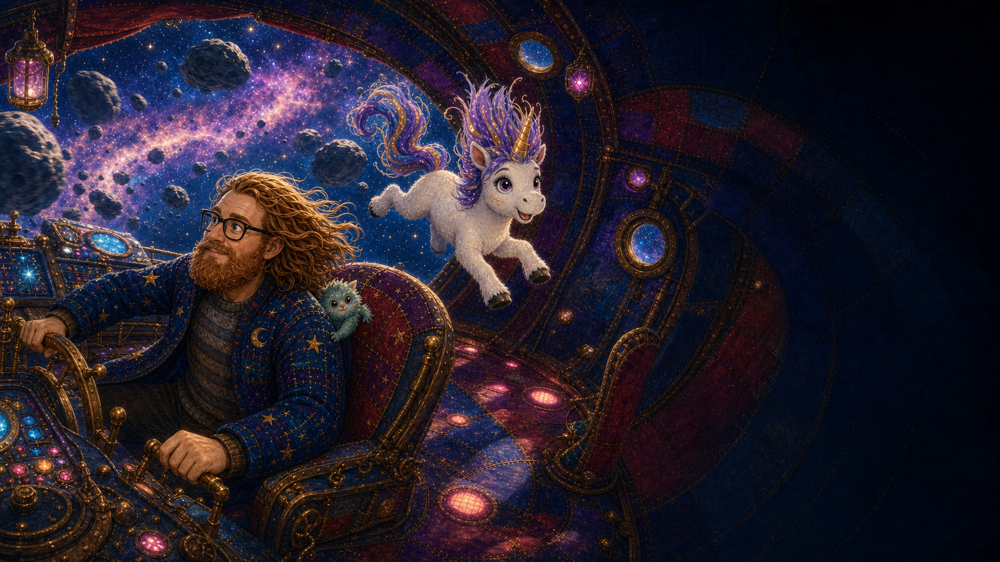
Beyond the familiar planets
Starbeard was not a pirate. He was the captain of a starship,and somewhere beneath Pluto’s frozen surface waited diamonds and rubies.
Starbeard checked the coordinates. Uni checked the snack cabinet. Then she checked it again.
Engines ready. WHOOOOOOOM!
Alarms cried BEEP! BEEP! BEEP! Starbeard dipped beneath one asteroid, twisted around another, and squeezed between two enormous boulders with barely a moonbeam to spare. Uni bounced around the bridge, her purple mane standing straight up.
When they burst into clear space, they noticed the mysterious little animal clinging to Starbeard’s chair. “Oh! Right! You’re here too!”
Five minutes later, they forgot again.
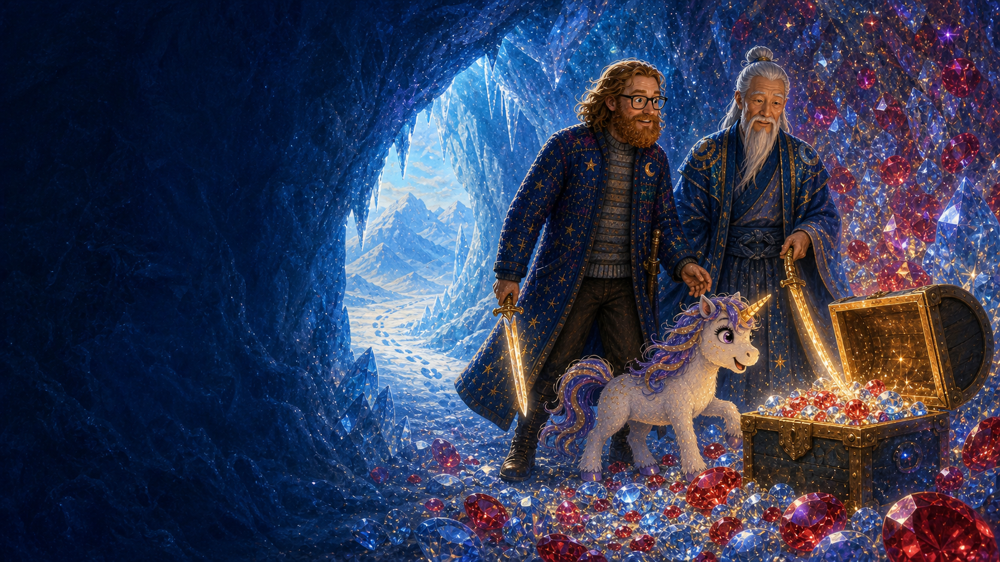
Pluto
Their boots and hooves crunched across Pluto’s glittering blue ice. Ahead stood a robed stranger carrying a sword made of light.
“I am the Sensei.”
He taught Starbeard the ancient ways of the Space Samurai: how to stand, how to move, how to watch, and how to know when to fight,and when not to.
When shadowy crystal creatures blocked the frozen caverns, Starbeard lowered his sword, listened to their warning hum, and found a peaceful path around them.
Beyond a doorway buried in the ice sparkled thousands of diamonds and brilliant red rubies. They filled a treasure chest, but Starbeard already knew the finest part of the journey was exploring with his best friend.
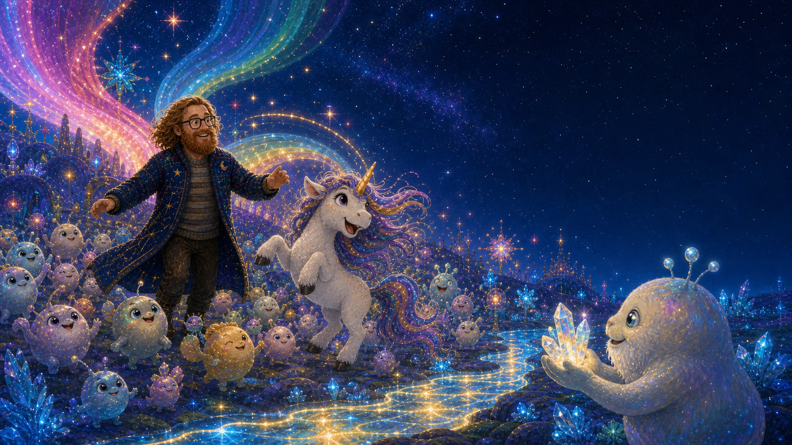
The Festival of Light
After Pluto, a strange signal led them to a planet that was not on any map. Blue plants glowed beside rivers of liquid starlight.
Something rustled. POP!
A tiny rainbow creature appeared. Then another. Then twenty more. “Greetings! We are the Lumi!”
That evening, thousands of Lumi gathered beneath ribbons of pink, blue, green, and gold. They sang. They danced. Uni danced particularly enthusiastically.
Before the explorers left, a gentle Lumi elder gave them glowing crystals. “These will help guide you on journeys yet to come.”
It was another treasure,but this one was a gift from friends.
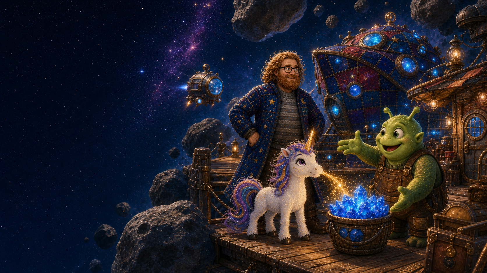
Dangerously low
The fuel gauge fell from half full… to quarter full… to dangerously low. Behind a giant asteroid, Uni spotted a tiny station belonging to a cheerful green alien named Zogo.
“I can refuel your ship! But the special blue crystals are trapped among the asteroids.”
Starbeard and Uni climbed into a little shuttle. Starbeard piloted between tumbling rocks while Uni’s magical horn revealed one hidden crystal after another.
Back at the station, Zogo placed the crystals inside the engines.
WHOOOOOOOM! The whole ship glowed blue.
“Full tank!” Zogo announced. He gave them one small humming crystal as a souvenir, and off they went again.
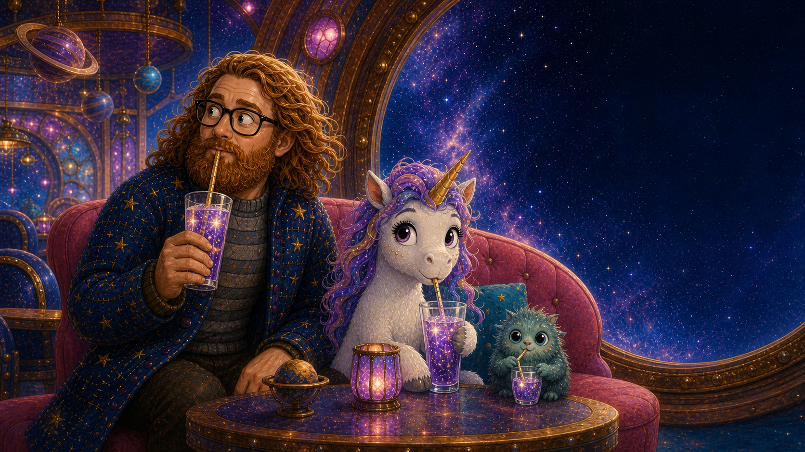
A sparkling rest stop
Eventually, even great explorers need a break. And Uni was thirsty.
Fortunately, floating nearby was a café in space. Inside were enormous windows, pink couches, blue chairs, purple lights, and drinks that sparkled.
Starbeard and Uni sipped star juice and talked about Pluto, the Sensei, the Lumi, and Zogo.
Then Starbeard frowned. “Didn’t someone else come with us?” Uni tilted her head. “Unicorn?”
Beside their table, the mysterious little animal lowered its third straw and sighed. Starbeard finally looked down. “Oh! There you are!”
Somehow, five minutes later, they forgot about it again.
The Celestial Isles
After the café, the Lumi crystals joined their light into a map. It led to an enormous doorway floating in space.
Beyond it were islands among clouds, glowing mushrooms, rivers of stardust, and bridges made entirely of light.
A tall guardian named Estrella welcomed them. She guided Starbeard and Uni to an enormous glowing sphere called the Heart of the Isles.
When Uni touched it, pictures appeared all around them: Pluto, the treasure, the Lumi, Zogo, and every adventure they had shared.
Then the map glowed again. A new destination appeared:
THE LUMINOUS LABYRINTH.
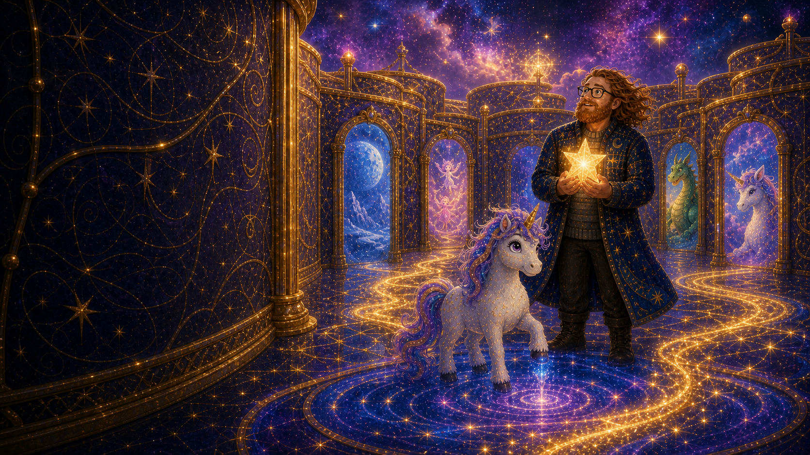
The Luminous Labyrinth
The labyrinth floated in space, its golden walls twisting through pink, purple, and blue stardust.
Inside, left became right. Right became left. Doors appeared and disappeared. Plants changed color, and crystals hummed little songs.
In a hall of mirrors, Starbeard and Uni saw memories instead of reflections: Pluto’s blue ice, the Lumi festival, Zogo’s smile, and Estrella’s shining bridge.
Then Uni dipped one hoof into a pool of stardust.
PLOOP. Golden symbols revealed the correct path.
At the maze’s center, a star-shaped crystal settled gently into Starbeard’s hands, and the entire labyrinth shone brighter. They had completed the maze. Now it was time to go home.
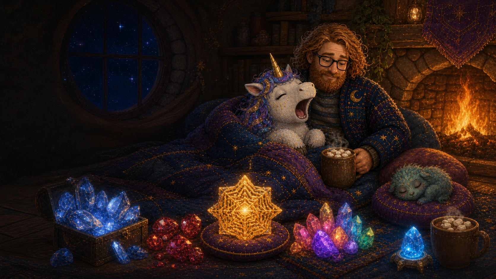
Home base
At home, Starbeard unpacked the diamonds of Pluto, the red rubies, the color-changing Lumi crystals, Zogo’s humming fuel crystal, and the star crystal from the labyrinth.
Uni gave a gigantic unicorn yawn. Soon they were wrapped in a thick stitched blanket beside the fireplace, with hot cocoa and marshmallows nearby.
Their treasures glowed softly around them,blue, red, rainbow, and gold.
Nearby, the mysterious little animal was already asleep on a cushion. “Oh,” Starbeard whispered. “There you are.” Then he forgot again.
Pop. Crackle. Pop.
Starbeard and Uni closed their eyes.
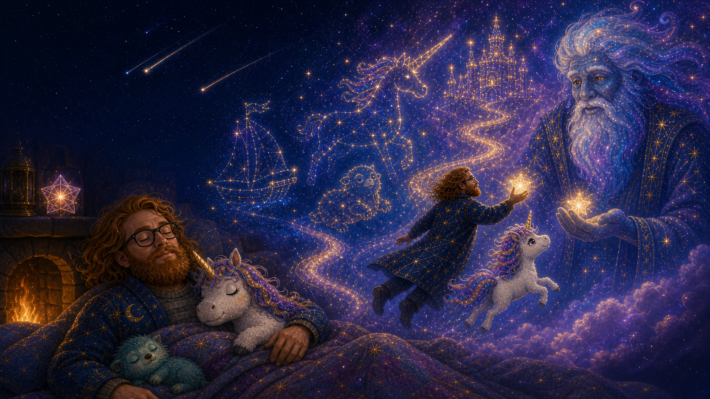
The shared dream
That night, Starbeard and Uni dreamed the same dream. They floated along a river of starlight to a castle built from stardust.
An ancient cosmic elder with galaxies in his eyes showed them moving pictures of their adventures. “You have collected many treasures,” he said. “But these are treasures too.”
Their memories. Their friends. And each other.
The elder gave them one tiny star each for their next journey. Then the dream softened, and they drifted home again. Beside the fireplace, the labyrinth crystal gave one quiet pulse.
Glow.
Outside, shooting stars crossed the sky as the universe whispered, “Good night, Starbeard. Good night, Uni. Sleep well, little explorers.”
The end… for tonight.
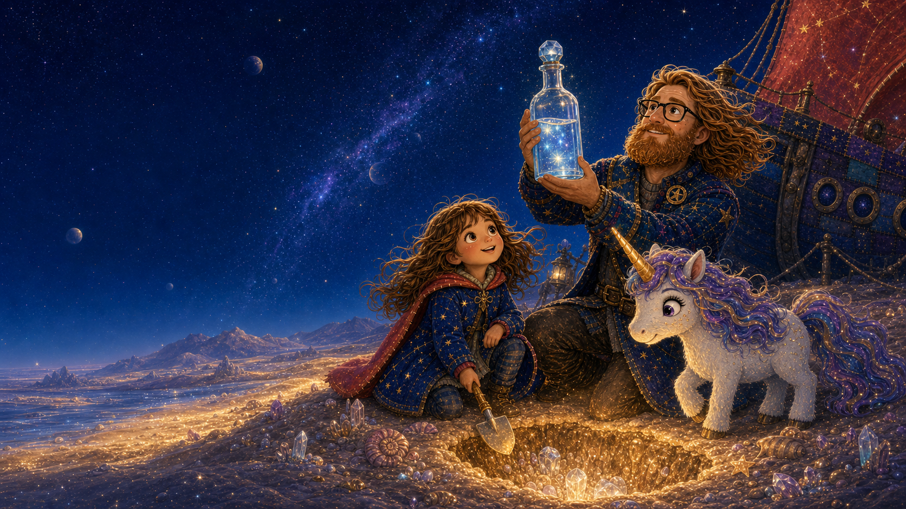
A gentle space-pirate adventure
A buried bottle of gentle light teaches Juliet, Uni, and Starbeard that the finest treasures help every adventurer feel their best.
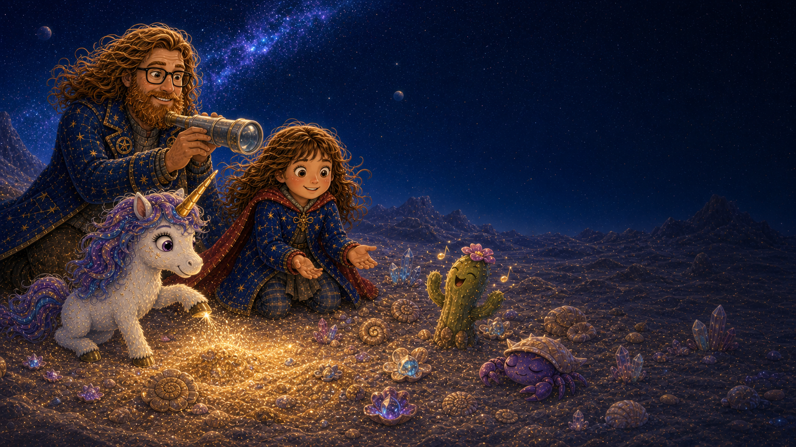
Prepare before you plunder
“Arrr, little treasure hunter,” said Starbeard, pointing his silver spyglass toward a glittering patch of moon-sand. “Ye can’t claim the treasure with empty hands!”
Juliet checked the path while Uni stamped one shiny hoof and gave a tiny sparkle-snort. They needed a trusty shovel, scoop, or space-spade before anyone could dig.
“First we prepare,” Starbeard said. “Then we plunder!”
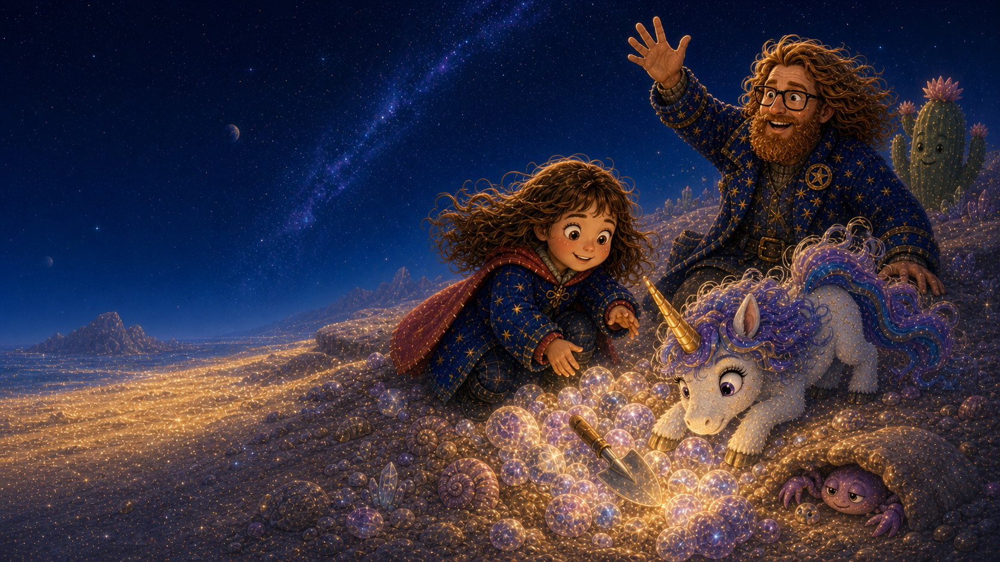
Look closely
The crew looked behind a singing cactus, beneath a sleepy space crab, and beside old treasure stones where silver moss twinkled in the dark.
Near a pile of star-shells that hummed a lullaby, Uni nudged something with her horn. Moon-sand slipped away from a sturdy silver space-spade.
“Arrr!” cried Starbeard. “A perfect diggin’ tool!”
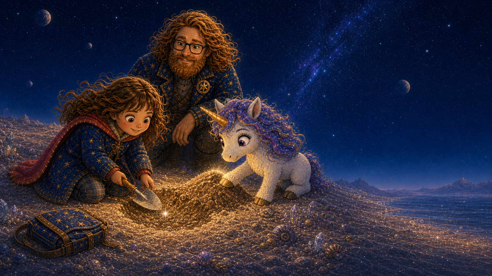
Gentle hands
Together they dug gently in the sparkling sand. Not too fast. Not too messy. And definitely not tossing sand into anyone’s special space-pack.
Juliet loosened the moon-sand, Uni brushed it aside, and Starbeard kept their little hole neat. Then the space-spade made a soft sound.
Clink.
Careful work can uncover wonderful things.
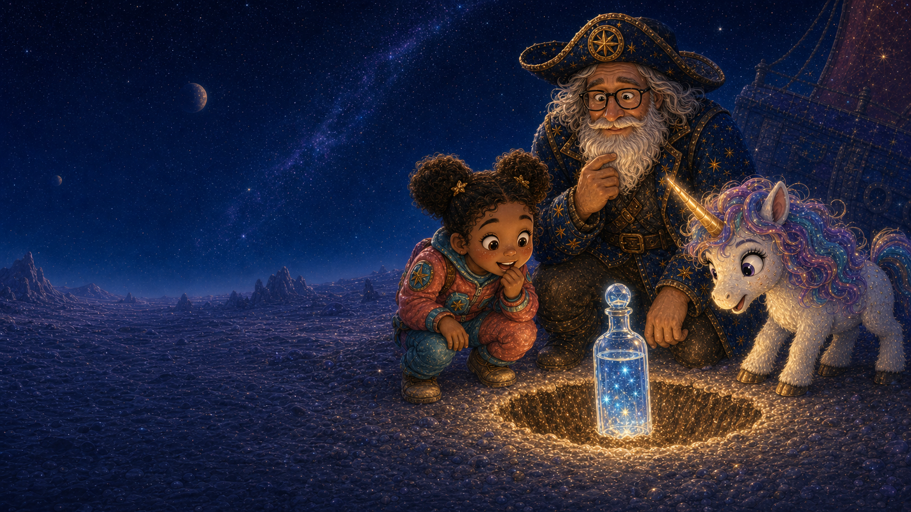
What could it be?
It was not jewels, and it was not even a cookie chest. Beneath the sand waited a crystal bottle filled with glowing water. Tiny lights swirled inside it like friendly galaxies.
“Is it star beer?” Juliet asked. “Nay.” Uni tilted her head. “Star energy?” “Nay.” Juliet grinned. “Cyberpunk space soda?”
Starbeard chuckled. “Nay,though that does sound flashy. This, me hearties, is starwater.”
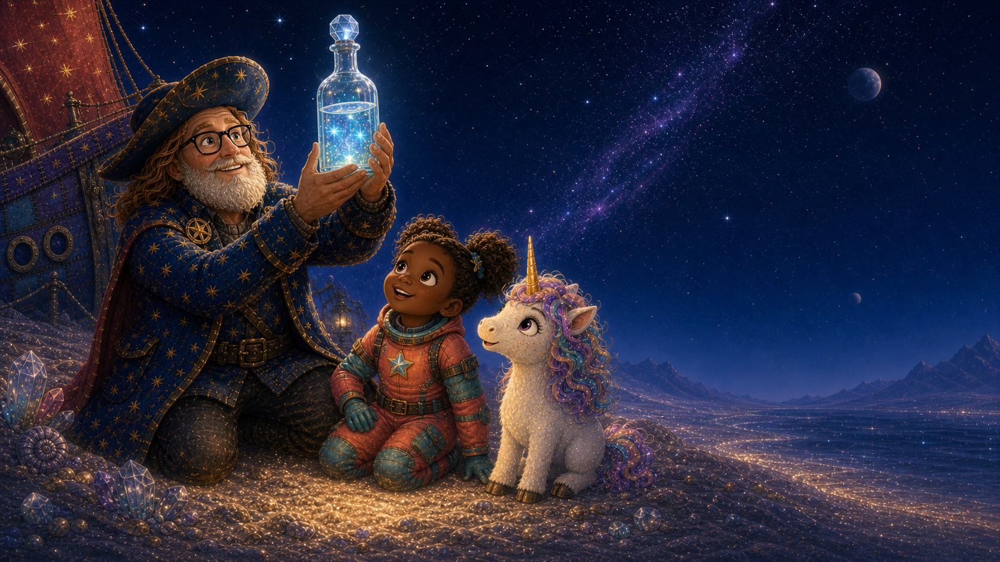
Sip and shine
Starbeard held the bottle up to the sky. “Starwater is pure and refreshing,” he said. “It keeps a pirate’s heart bright, a unicorn’s mane shiny, and a sleepy crew ready for kind adventures.”
It had no sugar, no fizz, no tricks, and no grumpy goblin bubbles,just clear cosmic goodness from the quiet wells between the stars.
Water helps every adventurer feel their best.
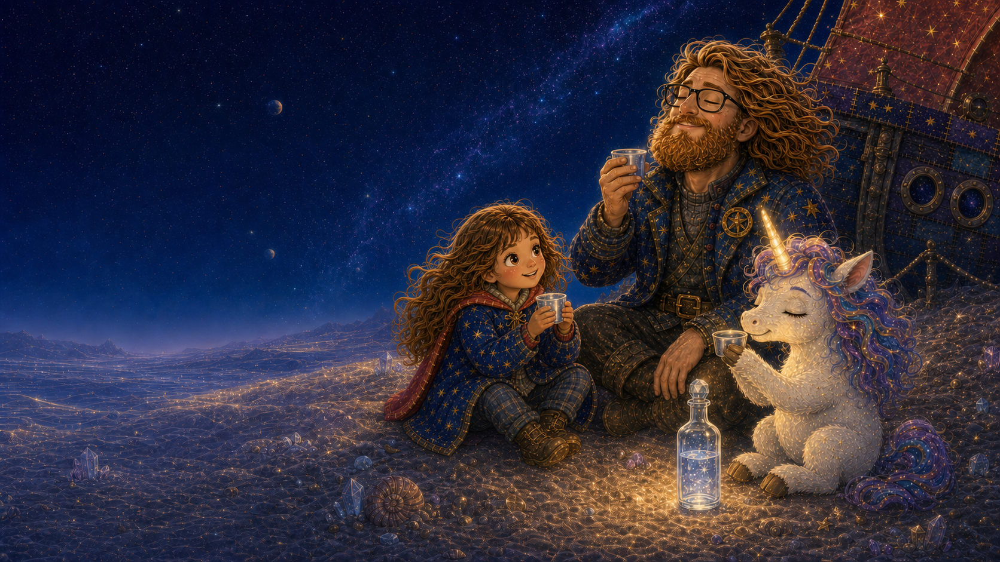
Calm, brave, and cozy
Starbeard poured three tiny sips. Uni drank first, very daintily, and her horn glowed softly. Juliet followed, smiling as the gentle light warmed her hands.
Starbeard took the last sip and gave one long, happy sigh. The starwater made them feel calm, brave, and cozy all at once.
“Aye,” he said. “Tastes like moonlight, courage, and bedtime.”
Carry kindness
Starbeard tucked the bottle safely away. “Remember this, little pirates. The best treasures do not always shine like gold. Some help ye feel better, sail farther, and share kindness wherever ye go.”
Juliet and Uni nodded. Then the crew climbed aboard their ship carrying no chest of coins, but something even better: a bottle of starwater.
Pure, refreshing, and full of gentle light.
Above them, the stars blinked goodnight as if they agreed.
Before He Was Admiral Pigeon — Book One
For Juliet
Scroll within each chapter to read every word. Use the arrows to turn chapters.
Before He Was Admiral Pigeon · Book One
Before he had a command, a reputation, or even a satisfactory way of landing on a narrow perch, Pigeon lived in a little home in a wall.
It was a comfortable home. There were three bowls, a shelf that leaned to the left, and a window with a view of another wall. Mother Tansy had made a curtain from soft blue cloth. Father Bram grew little pots of seed grass along the sill, although he maintained much larger gardens on the cavern roof.
The roof was a considerable distance away.
The little home stood inside Old Wing Cavern, a hollow mountain on the planet Pebble. Its ceiling rose so high that clouds sometimes wandered in and seemed surprised to find themselves indoors. Hundreds of pigeon homes occupied its walls. Bridges joined the larger ledges, and narrow stairs climbed through the rock for pigeons carrying awkward things or possessing very new wings.
Pigeon's wings were very new indeed.
That morning he was trying to land on the crooked shelf.
He landed in Father's breakfast.
Father considered the small gray pigeon sitting in his bowl.
"An ambitious choice," he said.
"I nearly reached the shelf."
"And have successfully reached the millet."
Mother lifted the bowl with her beak and tipped it gently. Pigeon slid onto the table in a shower of seeds.
"Try the lower perch first," she said. "I repaired it especially."
Pigeon shook himself. His neck flashed turquoise and violet where the window light caught it. Then he puffed his chest so impressively that two millet seeds rolled out.
From the doorway came a low chuckle.
"I knew a captain who used to do that," said Gran Cora.
"Land in breakfast?"
"Puff himself up before he had anything to report."
Gran lived three ledges below. She had a slightly crooked tail feather, a splendid collection of stories, and a way of watching the air before she entered it. She had brought a folded piece of cloth tucked into a carrying loop.
Pigeon immediately wanted to know what it was.
"Something for an outing," she said. "Provided your parents can spare their breakfast pilot."
Father removed a seed from Pigeon's head. "His present assignment is complete."
They took the stairs. Gran could fly perfectly well, and Pigeon could fly imperfectly well, though stairs allowed a conversation to last longer than a landing.
Outside their familiar neighborhood, the cavern changed. The homes grew farther apart. The ledges widened. Pigeon saw deep scratches in the stone, too straight to have been made by rain, and enormous old perches cut directly into the wall.
"Who lived here?" he asked.
"Warrior pigeons. Messengers. Weather watchers. Their families. Ours, among them."
Pigeon stopped beneath an arch carved with outspread wings.
The pigeons in the carving looked tremendously important. Their chests were magnificent. One held a branch. Another sheltered smaller birds beneath a wing.
"All of them?" he asked.
"Many generations."
He looked back toward the upper wall. From here his home was a tiny square of blue curtain in a great sweep of stone.
He had thought they lived in a little hole.
Apparently the hole was in a story.
Before He Was Admiral Pigeon · Book One
Beyond the arch lay the Hall of Returning Wings.
Light entered through a long crack overhead and fell across rows of names cut into the wall. Some letters were crisp. Others had grown shallow with age. Below them stood shelves of old service records, message cylinders, and tools whose purposes Pigeon found difficult to guess.
One object looked like a very serious spoon.
"Wind gauge," Gran said.
Another resembled a broken wind gauge.
"Spoon."
"Are you sure?"
"I knew its owner."
At a low stone table, Gran unfolded her cloth. Lines crossed it in brown and blue. Small circles marked sheltered ledges; stitched bars marked narrow passages. Along one edge, somebody had drawn a bowl.
"Is that where they had lunch?"
"Water," Gran said. "Your grandfather always complained that the bowl made him hungry."
Pigeon leaned closer. The route began at Old Wing Cavern and wound through the mountain toward the settlements on its eastern side.
"A family route cloth," Gran said. "Different wings have carried it. Different beaks have added to it."
She placed one claw beside a circle with a crooked star.
"This is where Messenger Fern turned back."
Fern was their ancestor. Pigeon had heard the name when grown pigeons discussed family matters over supper. He had imagined someone who had opinions about seed prices.
"Was Fern in a battle?"
"Several. She carried orders and brought reports through places where large flying machines could never go. This story happened in a storm."
A winter gale had scattered Fern's messenger flight. Reaching shelter, she discovered that three flyers were missing. The wind had changed, hiding the entrance behind sheets of snow.
"She went back out?"
Gran nodded. "She had noticed a ledge below the passage. She thought the others might have reached it."
"Did she find them?"
"All three. One had injured a wing. Fern made the journey between the ledge and the shelter again and again, showing them where to wait when the wind rose."
Pigeon examined the little crooked star. It seemed a very small mark for so much flying.
"Where is her battle picture?"
"We have her routes. Some letters. A complaint about the soup."
Pigeon looked disappointed.
"A very forceful complaint," Gran added. "It survives in excellent condition."
She showed him Fern's name in the wall. Farther along stood Cora's own.
Pigeon turned so quickly that his tail brushed the table.
"You?"
"I was a military messenger."
"You never said!"
"I have mentioned it. You were usually more interested in whether I had brought sunflower seeds."
He looked from Gran to the wall and back again. She was still Gran, with the crooked feather and the crumbs she sometimes saved for him. Somehow she also belonged among the names.
"I want to be a military pigeon," he said.
"Then you will have plenty to learn."
"I shall fly very fast."
"Useful."
"And be very brave."
"Also useful."
"And complain about the soup."
Gran folded the cloth.
"The family tradition appears to be in capable wings."
Before He Was Admiral Pigeon · Book One
Pigeon did not join the Airforce the following morning.
The following morning he tried the lower perch, missed it, and landed beneath the table. There were advantages to this. Nobody else had noticed the excellent seeds under there.
Growing took time.
Through warm seasons and cold ones, his wings strengthened. Father taught him to judge the wind above the roof gardens. Mother showed him how a load should rest before it was lifted. Gran took him along short stretches of the old routes and made him describe what he saw before they consulted the cloth.
"A blue line," he would begin.
"Out there," Gran would say.
He learned to notice moving leaves, sheltered corners, rain-dark rock, and the difference between a passage that looked inviting and a passage that had air rushing angrily out of it.
His turquoise-and-violet neck grew brighter. His landings improved. Father resumed eating breakfast with reasonable confidence.
Eventually Pigeon reached enlistment age.
He was a grown pigeon now, although Mother continued to find things on his head.
On the morning he went to the recruiting station, she removed a strand of dried grass from behind his eye.
"It belongs in the nest," she said.
"I thought I had checked."
"You checked the front."
The station occupied a sunny ledge beside the main cavern entrance. Above its doorway stood a perch plate bearing the words PLANETARY PIGEON AIRFORCE. Beyond it lay the open sky of Pebble, enormous and blue.
Pigeon hesitated on the final stair.
From here he could still see the little home in the wall. The curtain was open. Father's pots crowded the sill. It was possible, he realized, to want to go somewhere very much and still wish the place behind you would come along.
Gran arrived carrying the route cloth.
"For your service chest," she said.
"You're giving it to me?"
"You know how to read it. Take care of it, and remember to look at the actual mountain. The mountain has never signed an agreement to stay the same."
Father pressed his beak briefly against Pigeon's neck.
"Write when you can. The garden will continue growing without your supervision."
"Possibly with fewer missing peas," Mother said.
Inside, the recruiting officer asked Pigeon his name, where he lived, and why he wanted to serve.
Pigeon had prepared an answer about splendid deeds beneath the wide skies of Pebble. At the desk, it felt too large to get out.
"My family served," he said. "I've been learning the old routes. I want to learn the new ones too."
The officer opened the enlistment book.
"There are quite a few."
Pigeon made his mark beside his name.
When he came outside, the sky had become his next destination.
Before He Was Admiral Pigeon · Book One
Training began at High Perch Station, where the landing rails were straight, the sleeping alcoves were tidy, and breakfast disappeared at a speed that suggested a secret enemy.
Pigeon met Bramble beside a supply crate.
Bramble was sturdy, gray-brown, and trying to move the crate through a doorway narrower than the crate.
"It came through this doorway yesterday," Bramble said.
Pigeon studied it. "Perhaps sideways?"
"I have a suspicion yesterday was a wider day."
They turned it together. It fitted.
"Bramble," said Bramble.
"Pigeon."
"Excellent. You understand doors. We shall get on."
Tiller arrived moments later, flying beneath the ceiling beams and landing precisely on the station bell. It rang.
Every pigeon in the room looked up.
"I meant to do that," Tiller said.
"Good," said a voice from the doorway. "You can mean to polish it after supper."
Sergeant Flint had arrived.
Flint was an unremarkable-looking pigeon until he looked directly at you. Then it became difficult to remember any convincing reason for sitting on a bell.
He led the recruits to the training court. Their first task was a circuit around three marker towers and back to the starting rail.
Tiller leaned forward. "Timed?"
"Yes."
"Individually?"
"As a flight."
Tiller appeared to find this an unnecessarily complicated way of discovering that he was fastest.
At the signal, he shot ahead. Pigeon followed, determined to keep up. Bramble came after them with the measured wingbeats of somebody who expected the sky to remain available all morning.
Pigeon reached the second tower beside Tiller. He had never flown so hard. The station roof glittered below. Wind tugged pleasantly beneath his wings.
Then he looked back.
Bramble was circling the first tower. A loose marker streamer had wrapped around one foot.
Pigeon banked and returned. Together they landed on a maintenance ledge, where Pigeon caught the streamer in his beak and Bramble eased his foot free.
By the time they finished the course, Tiller was waiting at the starting rail.
"You could have come second," he told Pigeon.
"He caught a streamer."
"I saw. You were already behind me."
Flint landed beside them.
"Where was your flight at the second tower, Tiller?"
Tiller glanced at Bramble. "Behind me."
"That is a direction. I asked where they were."
He reset the clock.
"Again. This time, bring back the flight."
They flew more slowly. Tiller checked both towers before turning. Pigeon conserved his strength. Bramble completed the course without collecting any further decorations.
Their second time was better.
Tiller stared at the clock as if it had betrayed him.
That evening he polished the bell. Pigeon held the cleaning cloth steady, and Bramble explained that a bell was simply a very loud crate with no useful storage space.
Tiller laughed despite himself.
Before He Was Admiral Pigeon · Book One
The Airforce taught flying in weather Pigeon would previously have watched from a window.
It taught landings on wet rails, message relays across valleys, and what happened when three pigeons attempted to pass through one opening at once.
Mostly, what happened was Flint.
One morning he placed a shallow bowl in a carrying frame.
"Deliver this to the far platform."
The bowl contained water.
"Full?" Bramble asked.
"Preferably at both ends of the journey."
Tiller took the forward grip. Pigeon and Bramble took the side loops in their feet. At the first lift, the frame tilted and a cold wave splashed Pigeon beneath the tail.
Tiller struggled not to laugh.
"Refreshing," Pigeon said stiffly.
Bramble shifted one loop. "We are carrying it as three separate opinions."
They set it down and tried again. This time Bramble called the lift. Tiller matched the others' speed. Pigeon watched the far platform and described the gusts crossing its edge.
They arrived with most of the water.
"Better," Flint said.
By midday they could deliver it full.
Pigeon began to enjoy being good at things.
This was shortly followed by the navigation exercise.
Each flight had to reach a signal perch beyond the western ridge. Pigeon recognized part of the route from Gran's cloth and announced that a lower passage would save time.
"Have you flown it?" Tiller asked.
"I've studied it."
"Recently?" Bramble asked.
Pigeon had already pointed his beak toward the gap.
Inside, the passage narrowed sharply. Loose stones filled a place the cloth showed as open, and the draft blowing through the remaining crack carried dust straight into their faces.
They landed, sneezing.
"A beautifully detailed map of somewhere we cannot go," Bramble observed.
They retraced their route and reached the signal perch last.
Flint listened to Pigeon's explanation.
"What did the air tell you at the entrance?"
Pigeon thought of the dust and the sharp, uneven draft. He had noticed both. He had been too pleased with his shortcut to consider them.
"That something had changed."
"Use that next time."
That evening Pigeon spread the cloth in his sleeping alcove. He added a small note beside the blocked passage.
Tiller appeared at the entrance.
"You can write on it?"
"That's how it became a map."
Tiller settled beside him. "There was another opening above the first bend. I saw light in it."
Together they marked where it would need exploring.
Bramble arrived with supper and a bowl of water.
"Delivered without incident," he announced.
Pigeon moved the cloth well away from the bowl.
Before He Was Admiral Pigeon · Book One
Near the end of training, the recruits returned to Old Wing Cavern for a field assignment.
The cavern served as an Airforce shelter during rough weather. Pigeon's flight would help inspect its landing ledges and move supplies before the rainy season began.
He brought Bramble and Tiller home for supper.
Mother had fitted a second support beneath the crooked shelf.
"It looks different," Pigeon said.
"It holds things now."
Father supplied seed cakes from the rooftop harvest. Gran listened while Tiller described a difficult landing that became, with each sentence, a little more difficult than it had been at the time.
"Pigeon carried a bowl of water," Bramble contributed.
"Three of us carried it," Pigeon said.
"It required a substantial organization."
Outside the window, a loose corner of the blue curtain lifted toward the cavern wall.
Pigeon stopped pecking.
Usually air moved gently from the cavern entrance toward the roof openings. Now the curtain was drawing the other way.
Father noticed him watching.
"The roof gardens were very still this afternoon. Too still for the clouds coming over the ridge."
Gran stood and went to the window.
Beyond the entrance, the sky had turned the color of wet slate.
They heard the station weather bell before supper was finished.
At the emergency ledge, Flint was already receiving reports. A deep storm was approaching from the eastern valleys. The usual weather pattern had changed; strong wind would strike exposed settlements before morning.
The trained flights departed to carry warnings. The recruits moved drinking bowls, cleared shelter spaces, and secured supply frames. Pigeon could see his parents helping families from the outer ledges move farther inside.
Thunder rolled through the mountain.
Tiller looked out into the darkening entrance. "We could carry warnings too."
Flint placed a rescue line beside him.
"Check every fastening. We may need those more than we need another message."
Tiller checked them.
By nightfall the wind was driving rain almost to the emergency ledge. A returning messenger landed hard, gripping the rail with both feet.
"Lantern Ledge," she said between breaths. "Fourteen residents in the old watch hall. The outer approach is closed. Debris everywhere. Their low rooms are taking water."
Flint called for the route board.
Lantern Ledge lay beyond the eastern shoulder of the mountain. The marked flying route crossed an open ravine, now directly in the storm's path.
Pigeon studied the board.
Then he saw, in his mind, a blue line on old cloth.
"Sergeant," he said, "there may be a way through the mountain."
Before He Was Admiral Pigeon · Book One
Pigeon fetched the route cloth from his service chest.
He wanted to run in shouting that he had the answer. Remembering the dust in the western passage, he arrived carrying a possibility instead.
Flint cleared a dry space on the table.
The cloth showed a chain of shelter ledges between Old Wing Cavern and Lantern Ledge. Some were connected by passages; others required short flights across protected hollows.
"This section I know," Pigeon said, touching the first curve. "Gran took me there. This next section is older. It needs checking."
"Where does it arrive?"
"Behind the watch hall. There used to be a messenger door."
Flint sent for Gran Cora and the cavern keeper. Gran identified the landmarks she remembered. The keeper supplied recent notes from workers who maintained the eastern water channels. Between them, the route became less certain in some places and more useful in others.
At one point, the old cloth promised a dry floor.
"There will be running water there tonight," the keeper said.
Pigeon marked it.
Flint considered the supplies. They had rescue lines, broad carrying baskets, lamps, and strong messengers rested enough to make repeated trips.
"We inspect each section before bringing people through it," he said. "If the route fails, we return and choose another approach."
He assigned two experienced flyers to prepare the route behind them. Pigeon's training flight would go with him to the watch hall: Pigeon to read the familiar stone and help navigate, Tiller to scout short stretches, Bramble to manage the rescue equipment.
Pigeon's chest expanded.
"You are coming because you can do those jobs," Flint told them. "Keep doing them when you become frightened."
"When?" Bramble asked.
A violent gust struck the cavern mouth. A supply bowl rolled across the floor and hit the wall with a clang.
"Understood," Bramble said.
At the passage entrance, Mother checked the carrying loop that held Pigeon's cloth.
"The knot is sound," she said. "I made it."
Father touched his shoulder with a wing.
Gran watched the air coming out of the dark opening.
"Listen at the bends," she said.
Pigeon wanted to say something grand before he left. He found that he would rather stand close to them for another moment.
Then Flint gave the signal.
They entered the mountain.
Behind them, the lamps of Old Wing Cavern shrank into warm yellow points. Ahead, the first shelter ledge appeared exactly where Pigeon remembered it.
The second did too.
At the third, water poured across the route.
Before He Was Admiral Pigeon · Book One
The water came from a crack high in the ceiling. It struck a stone shelf, broke into spray, and streamed across the passage floor.
Bramble set down the baskets above the wet line.
"I preferred the bowl," he said.
Flint tested the air beyond the falling water. The route continued through a low opening, with very little space between the stream and the roof.
"We can pass," Tiller said.
"Can fourteen tired residents pass?" Flint asked.
Tiller looked again. "Some. The baskets won't."
Pigeon opened the cloth beneath a dry overhang. A branching line led upward to something called Bell Hollow.
He remembered asking Gran whether it contained a bell.
It had, she told him, once contained an echo so fine that young messengers used it to practice impressive announcements.
Now he could hear a thin, rising whistle above the water.
He lifted his head.
"There's air moving through that upper crack."
Tiller flew up to inspect it. He returned with droplets glittering on his back.
"A ledge beyond. Wide enough for us. I couldn't see the far end."
Flint checked it himself, then signaled them upward one at a time.
Bell Hollow was long and dry, with curved walls that carried every sound.
Bramble landed with the baskets.
"Splendid," he said.
"Splendid," the hollow replied.
"At last, a sensible opinion."
Pigeon could have laughed all the way through if the whistling had stayed steady.
Instead, it fell quiet.
He stopped before the next bend.
A moment later a gust roared down the passage. It pushed loose grit across the floor and rattled the empty basket frames. Then it weakened again.
"A breathing gap," Pigeon said. "Wind coming in at the far end. We used to wait through these with Gran."
They watched several gusts. Their strength varied, and Pigeon could find no dependable rhythm.
Flint placed them in a sheltered pocket.
"We move when the passage allows it."
Tiller went first to the next recess and signaled when he reached shelter. The others followed during a quieter interval. At each turn, someone waited where the next pigeon could see them.
It was slow, careful flying.
Then the tunnel opened behind a battered wooden door.
Pigeon knocked with his beak.
For a moment he heard only rain.
The door shifted. An elderly pigeon peered through the gap.
"If you've come to inspect the drains," she said, "I have several remarks."
Flint stepped forward.
"Airforce rescue."
The elderly pigeon closed her eyes in relief, then pulled the door wide.
Before He Was Admiral Pigeon · Book One
The old watch hall smelled of wet stone and frightened feathers.
Its fourteen residents occupied the upper perches while water crept across the floor below. A fallen branch pressed against the outer shutters. Each new gust scraped it along the wall with a dreadful wooden groan.
The elderly pigeon who had answered the door was Keeper Moss. She knew everybody's name, which baskets held food, and exactly which shutter would fail first.
"That one," she said, as something cracked.
Flint assigned the work at once.
Bramble fitted the carrying baskets for two very young pigeons and an older resident whose aching wing made the return flight impossible. The other residents could manage short flights, though several would need rests. Tiller checked the messenger doorway and cleared loose pieces of wood from its threshold.
Pigeon showed Keeper Moss the route.
"Bell Hollow?" she asked. "My grandmother used that passage."
"It's dry. We checked it coming here."
"Then I shall apologize to her memory. I told her nobody needed so many ways through a mountain."
One small pigeon sat alone on the lowest dry step.
"That's Button," Keeper Moss said. "He can fly the length of this hall. The noise has him stuck."
Pigeon crouched beside him.
Button was staring at the dark messenger door.
"I don't want to go in there."
"There's a dry ledge just inside."
"I don't want that either."
Pigeon considered this. Behind him, Bramble and Keeper Moss were settling the smallest residents into baskets. Flint was explaining the first stage to the others. The hall shuddered as the wind leaned against it.
Pigeon could describe the whole safe route. He could tell Button that staying here would be worse. Neither seemed likely to make the next step smaller.
"Would you come as far as I do?" he asked.
Button looked at him.
Pigeon took three steps toward the doorway, stopped, and looked back.
He was still close enough for Button to see the bright colors on his neck.
After a moment, Button came to stand beside him.
Pigeon took three more steps.
At the doorway he waited. Button inspected the threshold, the lamp, and the large feet of Sergeant Flint.
"Is he coming?" Button whispered.
"Yes."
"He looks as if he could tell the thunder off."
"He probably has a report prepared."
Button let out a small laugh and stepped into the passage.
Outside, the shutter Keeper Moss had selected gave way with a crash. Rain burst into the watch hall.
Flint helped the last residents through the messenger door. Together he and Tiller pulled it shut against the storm.
Fourteen residents stood with the rescue flight in the shelter beyond.
Pigeon counted them once while Keeper Moss checked their names.
Button pressed close to his side.
"What happens now?"
Pigeon looked toward the first ledge.
"We go to the next place together."
Before He Was Admiral Pigeon · Book One
Returning took far longer than coming.
The carrying baskets needed two flyers apiece at difficult turns, so the rescuers moved them one at a time between the resting ledges. Residents rested between the short flights. Flint moved along the line, judging who could continue and who needed another moment.
In Bell Hollow, thunder became a deep rolling voice that seemed to belong to the mountain itself.
Button stopped beside Pigeon.
"It sounds angry."
"Everything sounds important in here. Listen."
Pigeon lifted his head.
"Bramble has a seed on his bottom."
The hollow announced this to the entire rescue party.
Bramble glanced behind him. "Reliable reporting."
Button laughed. So did several residents who had been very quiet until then.
At the western end of the hollow, Tiller returned from scouting with difficult news. Spray now crossed the upper ledge. The water below had risen, and the turn around the falling stream was too tight for a loaded basket.
Flint inspected it and came back wet.
"We hold here."
Pigeon spread the cloth. There was another line, much thinner, leading around the hollow through an old resting chamber. Gran had never taken him there.
"I can check it," Tiller said.
"We check together," Flint replied.
He left Bramble managing the resting flock while he, Pigeon, and Tiller followed the side passage. It climbed through dry stone and ended at a split ledge overlooking the next shelter below. Water had washed away a narrow section of its lip. The gap was easy for a strong flyer, awkward for a basket, and frightening to contemplate while exhausted.
Beyond it stood the two experienced rescuers who had been preparing their return route.
One called that the remaining way to Old Wing was open.
Pigeon could see the distant glow of the cavern's lamps.
He wanted to fly straight to them.
His wings ached. He was cold beneath the feathers. Home was so close that for a moment he could almost smell Father's seed cakes.
Then he pictured Button waiting in the dark.
"I'll bring them to this ledge," he said.
Flint and the experienced rescuers prepared a crossing. Bramble, when Pigeon returned, immediately understood how the basket frames could travel along the rescue lines between the sheltered landing points.
"Slowly," Bramble said, examining the gap. "I should like the mountain to have time to admire our work."
Tiller crossed repeatedly, carrying light equipment and helping receive each basket. His speed was useful now because he could stop exactly where another pigeon needed him.
Pigeon guided the walking residents along the inner edge. At the exposed turn he watched the grit and listened for the next gust, bringing each small group through during a quieter interval.
Button reached the gap and crouched.
"I can't."
Pigeon looked at the distance. In fair weather, Button could have flown it. Tonight his little wings were trembling.
"There's room in the next basket," Pigeon said.
Button climbed in beside a sleeping youngster. Tiller took his place on the receiving ledge, making an absurdly solemn face. Button watched him throughout the crossing.
At last only Pigeon and Flint remained on the eastern side.
"After you," Flint said.
Pigeon flew the gap. His feet struck the landing stone, slid, and found their grip.
He drew a long breath.
Ahead, Bramble was moving the baskets. Tiller waited at the next turn. Keeper Moss had begun counting everyone aloud and objecting to anybody who changed places before she finished.
Pigeon took three steps toward them.
Then he stopped and looked back.
Flint was already coming.
Before He Was Admiral Pigeon · Book One
Old Wing Cavern received them in a jumble of lamps, warm voices, and dry bedding.
The fourteen residents of Lantern Ledge settled in the shelter rooms. Keeper Moss repeated their names to the receiving officer. The basket passengers were lifted out, offered water, and inspected by the station healer.
Button emerged looking sleepy and rather pleased with his transport.
"I traveled over a hole," he told Mother Tansy.
"So I hear."
"In an excellent basket."
Bramble bowed his head.
Tiller sat on a rail, too tired to describe anything as fast. Pigeon stood beside him until Father arrived with breakfast.
"You have returned at a practical hour," Father said.
Pigeon lowered his beak into the bowl and discovered that eating could require a surprising amount of effort.
Gran settled close while Mother checked the carrying loop. The route cloth was damp at one corner and speckled with mountain dust.
"We went through Bell Hollow," Pigeon said.
"Did it still have an echo?"
"Bramble's bottom has become famous."
"A promising beginning to a service record."
Pigeon tried to explain the whole journey. He reached the flooded passage before his eyes closed.
When he woke, the storm had moved beyond the mountain. Sunlight entered Old Wing in long pale beams, and somebody had placed a bowl within convenient pecking distance.
Later that day, Flint called the rescue party together.
They described the route from beginning to end while the station keeper amended the official maps. Pigeon spread the family cloth beside the larger chart. He marked the changed watercourse and the bypass around Bell Hollow. Tiller added the position of the receiving ledge. Bramble explained the basket crossing with three pebbles and a piece of string.
Flint asked what they would do differently.
Pigeon wanted to say that everything had worked. Looking at the route, he remembered how close the water had come to trapping the baskets.
"Check both ways around the hollow before moving the residents," he said. "If we have enough flyers."
Tiller nodded. "And keep someone watching the water while the rest of us work."
Flint entered both observations in the report.
Afterward, Pigeon took the cloth home. Gran studied its newest markings.
"It looks different," he said.
"It knows more."
Through the window they watched Button helping another youngster up the stairs. Button hopped ahead, stopped, and turned to see whether his companion was coming.
Gran glanced at Pigeon.
Pigeon became deeply interested in a seed on the table.
Before He Was Admiral Pigeon · Book One
Training continued.
The rescue did not make wet landing rails dry or cause message cylinders to fasten themselves. Pigeon still had drills to complete. Bramble still disliked unnecessary haste. Tiller remained the quickest flyer in their group and became increasingly good at knowing when to use it.
Together they finished their qualifying assignments.
On the morning of the ceremony, High Perch Station shone in clear sunlight. Families filled the visitors' ledges. Mother had brought enough seed cakes for a small campaign. Father was explaining the harvest to a pigeon who had asked only whether the seat beside him was taken.
Gran sat where she could see the sky.
The recruits stood along the main rail while Flint read their names. Each received an Airforce perch plate to mark a place in the service quarters.
Pigeon listened as Bramble's name was called, then Tiller's.
Then his own.
For a moment he saw the little hole in the wall, the crooked shelf, the enormous carved wings above the old arch. He remembered announcing that he would be brave before he knew how many ordinary things bravery might require him to keep doing.
He stepped forward.
Flint placed the plate before him.
"Qualified flyer, Planetary Pigeon Airforce."
Pigeon's chest puffed magnificently.
From the visitors' ledge, Gran gave a quiet chuckle.
After the ceremony, Bramble and Tiller carried their plates to the quarters. Pigeon returned home with his family for the afternoon. He would begin his first regular posting at High Perch in the morning.
The shelf remained crooked, although its new support held firm. The curtain had been washed. Father's pots had acquired new seedlings.
Pigeon placed the route cloth on the table and showed his parents the additions. Mother fetched fresh thread for a loose corner while Father asked about the carrying baskets. Gran listened to the account from the beginning this time, including the parts that had frightened him.
When he finished, she brought out Fern's old letter about the soup.
It was even more forceful than he had expected.
They laughed until a neighbor looked through the window to discover what was happening.
That evening Pigeon carried the cloth back to High Perch. He fitted his new plate beside the entrance to his sleeping alcove. Bramble's stood on one side, Tiller's on the other.
"A respectable neighborhood," Bramble said.
"We shall see," Tiller replied.
Beyond the station, the first stars appeared over Pebble. Pigeon watched them briefly. For now, there were valleys below those stars he had yet to cross, settlements whose names he had yet to learn, and a morning flight waiting on the duty board.
He checked the board before settling down to sleep.
At dawn he joined his friends on the rail.
At the signal they opened their wings together, three young Airforce flyers with a whole sky ahead of them.
Far inside Old Wing Cavern, the blue curtain stirred at the window of the little home in the wall.
Before He Was Admiral Pigeon — Book Two
For Juliet
Scroll within each chapter to read every word. Use the arrows to turn chapters.
Before He Was Admiral Pigeon · Book Two
After several seasons in the Planetary Pigeon Airforce, Pigeon knew the shape of Pebble's weather. He knew which clouds carried rain sideways and which valleys collected mist. He had carried medicine over flooded orchards and messages through winds that made the ground appear to be traveling in the wrong direction.
Now the whole planet fitted inside a window.
Pigeon leaned toward the shuttle's glass. Somewhere in that blue-and-brown roundness was Old Wing Cavern, and somewhere in its rock wall was a little home containing three pigeons who had watched him leave.
Father Bram had packed enough seeds for a modest famine. Mother Tansy had repaired the tube holding the old family route cloth. Gran Cora had inspected the shuttle, the pilot, and a suspicious crumb under the departure bench.
“Keep your letters interesting,” she had told him. “Your father wants to hear about the stars. Your mother wants to hear that you're eating. I want to know what goes wrong.”
“Why?”
“That is usually where the story starts.”
Beside him, Bramble was trying to recover a seed that floated just beyond his beak.
“I understood that joining the Galactic Pigean Space Corps involved travel,” he said. “I hadn't expected my breakfast to join separately.”
Tiller caught the seed, bounced against the opposite wall, and drifted backward with a startled expression.
“Excellent catch,” Bramble said. “Let us know when you finish stopping.”
They had transferred together. Sergeant Flint had seen them off with three fierce coos, a warning about loose cargo, and a farewell so quick that Pigeon suspected the sergeant was feeling something inconvenient.
The shuttle curved toward a ship like a wide silver wing. Lamps glowed along its sides, and a row of transparent bubbles rested beneath an open shelter at the rear.
Gold letters on its hull read HOMEWARD.
“Good name,” Bramble murmured.
Inside, the floor held their feet again. Pigeon straightened his iridescent neck feathers as Captain Vela approached. She was a dark gray pigeon with a small notch in her beak and the unhurried walk of somebody who knew where every corridor went.
Their new perch plates waited in a neat row. Beneath each name were the words SPACE CONVERSION FLIGHT.
Tiller looked at his. “Conversion to what?”
“Pigeons who can stop,” said Vela.
Bramble made an appreciative sound.
The captain led them past a room full of charts. Through another window, Pebble dwindled behind the ship. Pigeon felt the uncomfortable sensation that his home might disappear if he blinked.
Vela stopped beside him.
“First time away from your world's sky?”
He nodded.
“The kitchens serve supper at the middle bell. Write home afterward. The mail launch leaves before the last.”
She continued down the corridor. Pigeon followed, grateful that she had given him something ordinary to do.
That evening he wrote that the stars were bright, he had eaten well, and Tiller had already lost a race against a seed.
He left room at the bottom of the page for whatever went wrong tomorrow.
Before He Was Admiral Pigeon · Book Two
The transparent flight bubble contained a perch, steering pedals, a little cargo cradle, and room for a pigeon to spread both wings. Beyond its shell lay space.
Pigeon looked for a breeze. His feathers remained perfectly still.
“Your bubble carries your air,” Vela said over the flight radio. “Its thrusters move you. Your wings and feet tell it where you want to go. The rest of space has very little interest in flapping.”
Pigeon pressed a pedal.
His bubble slid out of its cradle and into the training yard, a ring of floating marker hoops tethered to Homeward. The carrier filled half his view. Pebble filled rather less of it than he liked.
He banked toward the first hoop.
The bubble turned beautifully.
It continued traveling sideways.
Pigeon flapped harder. The bubble spun, and the hoop passed above him, below him, and above him again.
“I appear to have acquired several hoops,” he reported.
“Same hoop,” said Vela. “Ease your wings. Press the slowing pedal.”
He pressed it too sharply and bumped a padded marker. A tremendous warning bell sounded inside his bubble.
Tiller's bubble shot past. A moment later, another bell rang over the radio.
Bramble drifted through the first hoop at the speed of a thoughtful cupboard.
“You will be late,” Tiller told him.
“I will be upright.”
By the end of the lesson, Pigeon had traveled backward through two hoops, sideways through one, and around a fourth without entering it at all. He had once been a flyer whom younger birds watched from the training ledge. Now a machine was congratulating him for arriving approximately near his own perch.
He stayed after the others landed.
Vela waited beside the launch rail.
“Could I have another turn?”
“You can. What will you change?”
Pigeon opened his beak. Practice harder sounded useful until he considered that he had already been trying extremely hard.
“I keep expecting the air to catch me,” he admitted.
“Then begin with a smaller journey.”
She moved two markers close together. Pigeon traveled from one to the other, stopped, and came back. Nothing rang. He tried again. Soon he could feel the little thrusters answering the pedals instead of fighting the missing wind.
When he returned, Bramble was waiting with a bowl of supper.
“Tiller says he meant to turn upside down.”
“Did he?”
“All seven times, apparently.”
Pigeon ate beside the window. Far away, sunlight touched Pebble's edge. He wanted to hear the familiar echo of Old Wing Cavern, and the wanting surprised him with its strength.
He took out the route cloth. Its faded stitches showed a thousand small decisions made by pigeons who had flown before him: shelter here, wait there, take the lower passage when the rain comes.
On the cloth's plain reverse, he sketched two hoops.
Underneath, he wrote: I can stop between these now.
It seemed too small for a letter home. He copied the drawing onto his letter anyway and sent the letter. The cloth went back into its tube beside his perch.
Before He Was Admiral Pigeon · Book Two
The next morning, Pigeon found Dr. Nib kneeling beside a bowl of something that no breakfast should contain.
“Don't eat that,” said Nib.
“I wasn't going to.”
“Excellent. We have avoided my least enjoyable explanation.”
Nib was a small pigeon whose laboratory occupied a corner of the upper rear flight deck. It contained neatly labeled drawers, untidily opened drawers, diagrams, tools, and one drawer labeled THINGS WHICH ESCAPED THE OTHER DRAWERS.
Above the door hung a polished sign: POOP DECK.
Pigeon looked from the sign to the bowl.
“Is that why—”
“The name came with ships long before I arrived,” Nib said. “We pigeons have simply made certain adjustments to its meaning.”
The deck crew collected droppings during the daily cleaning. Most went to the carrier's gardens. Some came to Nib, who was investigating whether pigeon poop could become the most embarrassing equipment in military history.
He pointed to a small sealed pod.
“Poop and stardew gel. Entirely experimental. Do stand behind the screen.”
The pod struck a practice lens with a splendid splat.
A pale, lumpy smear spread across the glass.
From the viewing booth, Tiller said, “The universe has become porridge.”
“You see?” Nib cried. “Ordinary droppings wouldn't spread properly out there. The gel helps them cling to an exterior lens.”
“For how long?” asked Bramble.
Nib pressed a control. A shutter closed over the lens. Something scrubbed behind it. When it opened, a clean strip revealed Tiller's eye.
“That,” Nib said, with less enthusiasm, “remains a discouraging question.”
Captain Vela arrived as the second shutter cleared the rest.
“An obscured observation lens,” she said. “Still a working ship. Still instruments and radio. Still an annoyed crew.”
“An extremely annoyed crew,” Nib agreed. “Science should be precise.”
She approved bubble trials against empty targets.
Pigeon carried one pod beneath his capsule. He approached the practice lens, aimed, and released.
The pod sailed past it.
From his new angle he watched it pass a marker hoop, miss the deck rail, and splat across the laboratory's outside window.
There was a long silence.
“A useful discovery,” Nib announced over the radio. “My window was in the wrong place.”
They spent the afternoon learning how a released pod kept traveling with its bubble's motion. Bramble was best at judging the load. Tiller was best at reaching awkward angles. Pigeon improved when he stopped thinking of throwing anything and began thinking of where everything was already going.
At supper, Nib appeared carrying an enormous diagram. A brown streak decorated one corner.
“The targeting problem is solvable,” he said.
“And your window?” asked Pigeon.
Nib considered this.
“My view has become more private.”
Before He Was Admiral Pigeon · Book Two
Their first formation exercise was a cargo run through the practice booms. Vela put Pigeon in charge.
The assignment warmed him all the way to his feet. At last there was something familiar: a route, a flock, a load to deliver.
Bramble's bubble carried a wide medical crate. Tiller would scout. Pigeon would lead.
“My left cradle is sticking,” Bramble said during departure checks.
“Will it hold?” Pigeon asked.
“Yes. It changes how closely I can turn around the—”
“We can use the middle line. I know that section.”
Vela's voice came over the radio. “Flight ready?”
Pigeon answered before anyone else could.
They entered the booms smoothly. Tiller called the first opening clear. Pigeon rounded a tight corner, felt the familiar satisfaction of a good turn, and looked back.
Bramble's crate had caught beneath a padded crossbar.
His bubble hung awkwardly to one side. Each movement pressed the crate harder against the boom.
“Stop,” Vela said.
Everything stopped except Pigeon's stomach, which seemed to fall a considerable distance.
A deck tug came to release the load. The exercise clock continued running. Tiller drifted beside Pigeon without speaking, which felt worse than anything he could have said.
Back aboard, Pigeon began explaining the turn.
Bramble interrupted him.
“I knew about the turn. I was telling you about the crate.”
Pigeon shut his beak.
Vela set the route diagram between them.
“Show me the flight you planned.”
Pigeon traced it with one claw.
“Now show me the flight Bramble could make.”
That route went around the outer boom. It was longer. Pigeon had dismissed it without asking.
The captain left the diagram with them.
For a while the only sound was the tug returning to its rail.
“I'm sorry,” Pigeon said. “You were giving me something I needed. I decided I already had it.”
Bramble examined the diagram.
“I would like the long way round.”
“Then we'll take it.”
They repeated the exercise the next morning. Before departure, Pigeon asked each flyer to describe the thing most likely to cause trouble. Tiller needed a wider stopping space after his scouting dash. Bramble needed room for the cradle. Pigeon admitted he might become impatient.
“I'll put that on the cargo list,” Bramble said. “Dangerous goods.”
They finished without a tug.
A letter from home waited on Pigeon's perch. Tansy had praised his little drawing of the hoops. Bram reported that the rooftop peas had defeated a neighboring gardener's fence. Gran Cora had added a line beneath them both.
I like knowing where you are while you learn. Send the next map.
Pigeon drew the long way round. This time he included three bubbles.
Before He Was Admiral Pigeon · Book Two
The distress call arrived during a lesson about docking clamps.
One moment Tiller was arguing that a clamp should look more obviously unclamped. The next, every lamp along the deck changed to amber.
Vela called the crew to the chart room.
Three little lights blinked beside a broken moon.
“The Hearth Convoy,” she said. “Apricot, Kettle, and Lantern. Food, water, medicine, and families returning to Mallow Station.”
Pigeon knew Mallow from the cargo notices. It was a garden station where enormous glass houses caught the sunlight, and where somebody apparently ordered watering cans by the hundred.
“Why have they stopped?”
Vela enlarged the chart.
The moon lay inside a thick belt of rock fragments. The broad channel through them was Larkspur Passage. Across its exit waited four dark ships.
“Iron Talon,” she said. “They arrived after the convoy entered. Commander Grint has closed the passage.”
Tiller's neck feathers lifted. “He can't close somebody else's passage.”
“He has,” Vela replied.
A recorded message sounded from the chart table.
“By authority of Marshal Clang, all cargo is to be surrendered for inspection and reassignment. Compliance will ensure orderly travel.”
The voice was crisp and comfortable. Pigeon disliked it more because it sounded as though it were announcing the opening of a seed shop.
The convoy's return route was much longer. The freighters had already spent fuel reaching the passage. They could wait in the sheltered loading basin or surrender their cargo. They could not take their passengers on a grand voyage around the broken moon.
“Those supplies belong to Mallow,” Bramble said.
“Yes.”
Homeward would approach the passage exit while the convoy remained sheltered. Vela had requested allied help; the nearest patrol ships were still too far away to reach them before the freighters would have to make their choice.
As the others discussed Grint's ships, Pigeon studied the moon.
A thin dotted line disappeared beneath the main channel. Half its label was hidden by a newer notice.
“What's that?” he asked.
Nib shifted the notice. OLD LAMP SERVICE ROUTE. SMALL VESSELS ONLY.
“Maintenance launches used it to reach the channel lights,” Vela said. “The lamp towers were retired when the navigation buoys arrived.”
“Does it still go through?”
“The chart can't tell us.”
Pigeon leaned closer. The line followed the sheltered side of the larger rocks. It reminded him of the ledges on the route cloth, where a pigeon could stop when the main air passage was too dangerous.
“Could we look?”
Vela considered the route, then the three waiting ships.
“We can look. Two scouts, two separate accounts. A dotted line is somebody's old information.”
Tiller stepped beside Pigeon.
“I'll take the first account.”
“And I'll take the slower one,” Pigeon said.
From the chart table came a new message. The captain of Lantern was asking whether Mallow's children would still get their medicine.
Vela answered immediately.
“We are here. Keep your ships together. We are working on your route.”
Before He Was Admiral Pigeon · Book Two
From a window, the broken moon had looked like a cracked bowl surrounded by crumbs.
Inside its ring, the crumbs were mountains.
Pigeon and Tiller followed a navigation buoy into shadow. Their bubbles lit the rough surface of a rock that turned so slowly Pigeon first mistook it for something still.
“It moves,” Tiller said.
“I see.”
“You see now. I saw first.”
Pigeon smiled despite the hollow feeling beneath his feathers.
They found the first retired lamp tower lying along a cliff of stone. A service rail continued beneath it. Tiller followed the rail while Pigeon recorded the openings and the rocks around them.
They traveled slowly. Even Tiller traveled slowly.
Their radios clicked with brief observations: narrow here, loose fragments there, clear space beyond. Homeward received each report from its position outside the ring. The little service route was becoming a present-day map.
At the second tower, Pigeon saw an opening beyond two overlapping ridges.
“Straight through?”
Tiller hovered beside it.
“Wait.”
The near ridge drifted across the far one. The inviting gap closed.
Pigeon felt his claws tighten on the perch.
“I thought that was one rock.”
“Two,” Tiller said. “I thought so too until the shadows moved.”
They waited for it to open again, then watched a second time. There was room for a bubble easily, and perhaps for a freighter if it entered at the right moment. Beyond lay a deep pocket sheltered on three sides.
Pigeon marked a waiting place.
Near the far end, an old ore-hauling berth widened the route. A faded sign showed a barge much larger than either scout's bubble.
“The maintenance launches shared a road,” Pigeon said.
“And somebody forgot to give it a new label.”
Tiller went ahead to inspect the last bend.
An Iron Talon patrol boat appeared across the opening.
Pigeon pressed his slowing pedal. His bubble stopped beneath the old berth's lip. Tiller tucked behind a broken lamp housing, scarcely farther away than a wingbeat.
The patrol boat's white observation lens turned toward the rocks.
Pigeon could hear his own breathing. He wanted to ask whether Tiller was safe. Their radio silence had been agreed before departure. He kept his beak closed.
The lens paused.
Then the boat passed on, its thrusters stirring pale dust from the rock face.
Tiller emerged after it disappeared.
“I dislike being interesting to that boat.”
“Same.”
At the exit, two great shelves of stone made a second moving opening. They watched a complete turn before measuring the widest gap against the freighters' charted shapes. Apricot and Lantern could make the turns. Kettle's side loads were too wide.
Back aboard Homeward, Bramble studied their drawings.
“We could bring the loads inboard,” he said. “Move the water tanks along the center rack.”
“While she's waiting in the basin?” Vela asked.
“If her captain lets me touch his cargo arrangement.”
The captain of Kettle joined them by radio. He heard Bramble out, objected to three details, and accepted a fourth arrangement they devised together.
Pigeon added it to the map.
The dotted line had acquired corners, warnings, and somewhere to wait.
Before He Was Admiral Pigeon · Book Two
Homeward could not enter the service route. Captain Vela positioned her behind the moon's broad shadow and sent the three pigeons to the convoy by the sheltered approach.
The freighters were old and practical. Apricot had mismatched loading doors. Kettle carried water tanks that made her resemble a kettle somebody had sat on. Lantern's clinic windows glowed warmly above her cargo hold.
Captain Hobb of Kettle met Bramble at the docking rail.
“Nothing has fallen off this ship in eleven seasons.”
“Encouraging,” said Bramble. “We'll try to keep the run going.”
While they reorganized the tanks, Pigeon visited Lantern.
A young fieldmouse passenger stood beside the window with a folded paper bird. She watched his bubble being brought inside.
“Does yours fly by itself?” she asked, pointing to the capsule.
“It has thrusters,” Pigeon told her. “I tell them where to go.”
She considered this and looked down at the paper bird.
“Mine has me.”
The captain brought Pigeon to a chart screen. He explained the narrow route and the waiting pocket. She asked about the turns. He showed her Tiller's observations. She asked about the patrol boat. He told her that too.
“And if we have to stop?”
“You stop. We won't ask you to guess what the ship ahead is doing.”
The captain studied him for a moment, then began assigning her crew to their stations.
Back at the dock, Nib was talking through a display beside the splat-pod rack.
“Remember, you carry a small number of embarrassing interruptions. They remain interruptions, even when spectacular.”
Pigeon described the patrol boat's polished front lens.
“My favorite kind,” Nib said. “Observe the shutters as well.”
Their plan was straightforward enough to frighten Pigeon. Homeward would show herself at the main exit and demand passage. As Grint's ships turned toward the carrier, the pigeons would smear the patrol boat's observation and aiming lenses. The convoy would begin entering the service route during the confusion.
They would continue only while Tiller's scouting reports showed the way clear.
Vela spoke to each captain, then each pigeon. Bramble had finished moving the water tanks and verified Kettle's turns with Hobb. Tiller knew which rocks could hide his bubble. Pigeon knew where the three freighters must wait.
“Captain,” he said privately, “what if the confusion isn't long enough?”
“Then you bring them into shelter and tell me. You have permission to stop this plan.”
He had wanted command because it sounded like being the bird who said go. The word stop felt heavier.
Before returning to his bubble, he saw the young passenger again. She had placed her paper bird on Lantern's window ledge, pointing toward Mallow.
Pigeon took three steps along the docking rail, stopped, and looked back at his friends.
Bramble closed the last cargo catch. Tiller settled onto his perch.
They were ready.
Before He Was Admiral Pigeon · Book Two
Homeward emerged into sunlight.
“Commander Grint,” Vela called. “These civilian ships are traveling to Mallow Station. Open the passage.”
“Inspection is compulsory,” Grint replied.
“Taking their food is not an inspection.”
The Iron Talon ships turned. Their polished lenses flashed white.
Beside the service route, Tiller rose over the patrol boat's viewing turret. Pigeon approached below it. Each released a pod.
Two splendid splats blossomed across the front glass.
On the open radio, somebody shouted, “What is on the window?”
Somebody else shouted, “Don't wipe it sideways!”
The patrol boat swerved away from a rock. Pigeon felt a wild burst of joy. After all the missed targets, the stained laboratory window, and the patient adjustments, the ridiculous thing had worked.
“Apricot, begin,” he called.
The first freighter slipped beneath the retired lamp tower. Kettle followed with her tanks tucked close. Lantern waited until the route behind Kettle was clear.
Then metal shutters snapped across the patrol boat's face.
“Front view lost,” its pilot reported. “Using flank observation.”
A second lens opened farther aft. The boat corrected its course. A thin amber clamp-beam reached toward Apricot, searching for a steady grip on her hull.
“Pigeon, another eye,” Tiller called.
He released his remaining pod at the flank lens. The smear caught its edge. The beam slipped sideways and struck empty rock.
“Convoy hold,” Pigeon said. “Apricot, into the marked pocket. Kettle, follow. Lantern, remain behind the first tower.”
Captain Hobb was already turning. A loose cargo strap drifted into Kettle's side thruster guard and caught.
“Restricted turn,” he reported.
Bramble moved alongside in his bubble. Its cargo arm hooked the strap and pulled it free. Kettle slid into the pocket behind Apricot as the patrol boat regained its view.
Pigeon waited above the turn until Lantern had backed into shelter. The amber beam swept past him, close enough to fill his bubble with yellow light.
He pressed the pedal and dropped beneath a stone ledge.
No one spoke for several breaths.
Then Bramble said, “Everyone is here.”
Pigeon's claws gripped the perch so tightly they ached.
Grint's voice crossed the radio.
“Auxiliary patrol, watch the side channels. The carrier is a distraction. No cargo is to leave this sector.”
Their small attack had revealed that the convoy was trying to move. Two patrol boats now watched the ring instead of one.
Pigeon reported every part of it to Vela, including how little time the splats had bought.
“Remain in shelter,” she said. “We'll work from where you are.”
He stared at the route map. Three waiting ships. Two watchers. Far fewer pods.
Through Lantern's distant window he could just see a tiny white shape.
The paper bird still pointed toward Mallow.
Before He Was Admiral Pigeon · Book Two
Pigeon returned to Lantern's dock to speak with her captain. The fieldmouse child was asleep beneath the window. Her paper bird had tipped onto one wing.
He wanted, suddenly and fiercely, to be in the little home in the wall. He wanted Bram complaining about stubborn seeds, Tansy searching for a tool beneath the shelf, Gran Cora pretending she had never been worried about anything.
Instead he opened the channel to the other ships.
“Tell me what each of you needs.”
Apricot needed time to turn before accelerating. Kettle needed the outside curve because of her length. Lantern had used precious fuel reversing into shelter; she needed a steady journey with as few stops as possible.
Pigeon redrew their approach.
Tiller returned from another careful look. “The second patrol boat waits beyond the final bend. It can't see through the moving ridge. I can lead it toward the opening on the other side.”
“Can you get away?”
“Through the lamp arch. A bubble fits. The boat won't.”
“If it stays where it is?”
“I'll tell you before the ships leave the pocket.”
Bramble laid out their remaining pods. Three.
Nib listened from Homeward, making an occasional scratching sound as he drew.
“We used them too early,” Pigeon said. “Before, we hoped the boat would stay confused while the convoy traveled. Now we need the convoy near the last turn first.”
“And both viewing faces obscured together,” Nib added. “The instruments still show that a ship is present. Those little aiming eyes give its clamp-beam the close view needed to hold a moving hull.”
“How do we keep the convoy hidden until then?” Lantern's captain asked.
Pigeon showed her the sequence of sheltered pockets, including one Tiller had just found near the exit. Apricot and Kettle would move first. Lantern would follow while they waited out of sight. Then they would cross the last opening together, keeping the clinic ship's journey steady.
Vela examined the plan.
“Homeward will enter the broad passage and occupy the main ships. When you emerge, come beneath our wing. We'll escort you the rest of the way.”
Bramble passed one of his pods to Pigeon. He kept the other.
“One for each face,” he said. “One spare.”
Their bubble gauges showed ample breathing air and less generous thruster reserves. They had been maneuvering for a long time.
“Mine has the strongest towing arm,” Bramble said. “I'll remain at the rear until everyone clears.”
Pigeon drew Bramble's position on the map, then Tiller's escape through the arch, then Homeward waiting beyond the rocks.
The page was crowded. He could find every friend on it.
Lantern's captain studied the final turn and nodded.
Pigeon returned to his bubble. Before the shell closed, he looked once more toward the window.
The child had woken. She set her paper bird upright and gave it a small, determined push toward the glass.
Before He Was Admiral Pigeon · Book Two
Tiller went first.
Pigeon watched his friend's bubble glide along the underside of the broken lamp tower. It appeared for a moment against the stars, then vanished beyond the ridge.
The radio remained quiet.
Apricot's captain asked whether to move.
“Wait for Tiller,” Pigeon said.
Far beyond them, Homeward entered the main channel. The Iron Talon ships shifted to block her. Vela held her course until their clamp-beams brightened, then curved across their bows, making them turn with her.
“Your convoy cannot leave,” Grint announced.
“It has somewhere to be,” Vela replied.
Tiller's voice returned.
“Second boat following. I'm at the arch.”
Something struck metal with a distant clang transmitted through his bubble radio.
“Tiller?”
“Loose sign. It says DO NOT OBSTRUCT. Sensible advice.”
His bubble slipped through. The larger patrol boat slowed outside, searching for a way around the tower.
“Route clear,” Tiller said. “Beginning my return.”
Apricot left the waiting pocket. Kettle followed along the outer curve, turning exactly as Bramble and Hobb had planned. When they reached the final shelter, Lantern began her steady passage between the rocks.
Pigeon traveled beside the clinic ship. He could see the paper bird in the window and the child pointing him out to somebody taller.
At the overlapping ridges, Lantern's captain eased her ship forward.
The gap narrowed.
Pigeon felt the old urge to hurry everyone.
Tiller called from ahead. “Opening again. Hold your course.”
The ridges parted. Lantern slid through, close enough for lamplight to reveal pebbles in the stone.
All three ships reached the last shelter.
Pigeon and Bramble took their positions on opposite sides of the watching patrol boat. Beneath its front shutter, the observation lens gleamed clean. Its flank aiming eye searched the ring.
“Ready,” Bramble said.
“Homeward ready,” Vela answered.
Pigeon counted the convoy captains' replies. Apricot. Kettle. Lantern.
He released his first pod.
Bramble released his.
The splats landed almost together, one broad and magnificent, the other shaped like a rude question mark.
“Cross now,” Pigeon called.
Apricot emerged into open space. Kettle followed. The patrol boat's shutters slammed closed, and its clamp-beam groped through the freighters' wake without finding a grip.
Homeward curved toward them, shields glowing as Grint's ships tried to follow her turn.
For a moment, Pigeon could see the whole route working: Tiller watching the rocks, Bramble guarding the rear, the freighters moving, the carrier waiting.
Then the second patrol boat rounded the lamp tower.
Its lens was clean.
Lantern had nearly cleared the rocks when an amber beam fastened to her stern.
The clinic ship jerked backward.
“Caught,” her captain said.
Behind her, the two great shelves at the exit continued their slow, indifferent movement toward each other.
Before He Was Admiral Pigeon · Book Two
Pigeon turned toward Lantern.
The patrol boat held her just outside the gap. Her engines glowed as she struggled against its clamp-beam. Within her windows, small figures hurried away from the tilting floor.
“Ease your engines,” Bramble told her captain. “Save enough to leave when we free you.”
He brought his bubble toward the clinic ship. Its cargo arm caught her rear towing loop. His thrusters could help steady the stern, although they could never pull a freighter free of a patrol boat.
Pigeon had one pod.
The enemy's front lens faced Lantern. A long shutter hood protected it from above. Pigeon could approach underneath, close to the amber beam, and release from there.
His reserve light glowed.
He could make the approach. He could not make it and return to Homeward alone.
“Bramble,” he said. “If I use the last of my return fuel, can you collect me?”
Bramble looked across the gap between them.
“Yes. Show me where you'll be.”
Pigeon marked a point beyond the patrol boat's lower rail. Once he released the pod, his bubble's motion would carry him there. He would have enough thrust for one slowing correction.
“Tiller, watch my path.”
“Watching.”
Pigeon pressed the pedal.
His bubble moved toward the amber beam. Lantern's broad hull rose on one side of him. On the other waited the patrol boat, large enough to make his little capsule feel like a seed.
“Unidentified bubble, turn away,” its pilot ordered.
Pigeon kept going.
The boat's lower rail approached. He could see scrapes on the metal and a small dent beneath the lens. Behind the glass, a crew member leaned forward, suddenly understanding what the pod carried.
The shutter began to close.
Pigeon released.
The pod reached the glass just ahead of the shutter and spread across it in a glorious, appalling splat.
The clamp-beam wavered.
“Lantern, now!”
The captain fired her engines. Bramble steadied the stern as the ship pulled away, then released her towing loop.
Lantern slid clear.
Behind her, the shelves closed with a slow scattering of stones.
Pigeon made his last correction. His bubble slowed beside the lower rail, then drifted with the small remaining motion he had been unable to cancel.
The steering pedals answered with a hollow warning tone.
“I'm here,” he said.
The patrol boat was already scrubbing its lens.
Pigeon could do nothing useful with his wings. He folded them, listened to the air moving inside his shell, and watched the turning stars.
“Loose fragment on your left,” Tiller called.
Bramble's bubble appeared above him. Its cargo arm reached out, missed his docking ring, and withdrew.
The fragment passed between them.
For one dreadful moment, Bramble disappeared behind it.
Then the arm returned. A clamp closed around Pigeon's ring with the most beautiful click he had ever heard.
“Got you,” Bramble said.
He pulled Pigeon beneath the old lamp arch. Tiller led them through its narrow opening as the patrol boat regained its view. The boat turned to pursue and found a stone ridge where its route should have been.
Beyond the ring, Homeward's broad wing sheltered three freighters.
Vela's deck crew brought the bubbles in. When Pigeon's shell opened, his feet refused to leave the perch.
Bramble waited beside him.
At last Pigeon climbed out and leaned against his friend's sturdy shoulder.
“I was frightened,” he said.
“I noticed,” Bramble replied. “You sounded very polite.”
Pigeon laughed. The laugh shook, then settled.
From the flight-deck window he watched Lantern take her place behind Kettle. Three ships together, traveling toward their destination.
Before He Was Admiral Pigeon · Book Two
Mallow Station welcomed the convoy with open docking arms and an argument about where to put so many watering cans.
The gardeners wanted the cans delivered first. The cooks wanted the food. The clinic wanted its medicine, which settled the matter immediately.
Pigeon watched Lantern unload beneath a canopy of bright leaves. Families embraced. Cargo trolleys squeaked. A tired captain sat down halfway through a sentence and fell asleep before reaching the end.
The fieldmouse child found Pigeon near the docking rail.
She offered him the paper bird.
“It arrived,” she said.
Pigeon took it gently in his beak. One wing was crooked. He liked that wing best.
Homeward stayed while the freighters refueled and the station counted its supplies. Allied patrol ships arrived to escort later traffic. The Iron Talon blockade at Larkspur still existed; for now, travelers would use another route under escort. Vela sent the scouts' complete chart to the ships responsible for the region.
Then she called Pigeon to the poop deck.
The crew had gathered beneath the launch shelter. Nib had cleaned his laboratory window for the occasion, although a stubborn pale crescent remained in one corner.
Vela stood beside a new perch plate.
“The corps has confirmed your appointment,” she told Pigeon. “Flight Lieutenant. Command of Homeward's new passage patrol.”
Pigeon stared at the words beneath his name.
“Bramble and Tiller have agreed to join you,” Vela continued. “More flyers will arrive after conversion training. Your work will be scouting, escort, and rescue along the routes that need you.”
“And experiments,” Nib added.
“Reviewed experiments,” said Vela.
Nib nodded solemnly. Behind him, a drawer opened by itself and deposited three diagrams on the floor.
Vela described what the whole crew had done: the route Tiller had found, the cargo Bramble had moved, the captains who had guided their ships, the engineering, the carrier's maneuver. When she spoke of Pigeon's final flight, he looked toward the friend who had towed him home.
Bramble inclined his head.
Afterward, Pigeon wrote a long letter.
He told Tansy about the meals, Bram about Mallow's gardens, and Gran Cora exactly what had gone wrong. He explained the rank and drew the route, including the waiting places. He described the sound of Bramble's towing clamp.
He left out none of the fear.
Their reply caught Homeward at the next mail station. Bram enclosed a drawing of a watering can far too large for the rooftop garden. Tansy asked whether the new perch was comfortable. Gran Cora wanted to meet Dr. Nib.
I have questions, she wrote. Your mother says I should put them in a separate letter.
Pigeon placed the reply beside the route cloth and the paper bird.
Beyond his cabin, new orders arrived. Marshal Clang had seized another travel gate. More ships needed escorts. The map of the Bellflower Galaxy was filling with warnings.
There would be other flights, other mistakes, and much more to learn before anybody called him Admiral.
For now, three bubbles waited on the deck.
Pigeon walked toward them, took three steps, stopped, and looked back.
His patrol followed.
Before He Was Admiral Pigeon — Book Three
For Juliet
Scroll within each chapter to read every word. Use the arrows to turn chapters.
Before He Was Admiral Pigeon · Book Three
The most important map on Commander Pigeon's desk had a crumb on it.
It was a very ordinary crumb. Father Bram had accidentally folded it into a letter from home, and Pigeon had accidentally eaten half of it before noticing that the letter said, That is a piece of your mother's new seed loaf. Tell her it survived the journey.
The remaining half rested on the blue circle marking Pebble.
Beyond that circle stretched the Bellflower Galaxy: curling star roads, scattered worlds, travel gates, and a growing number of red marks.
Pigeon studied the red marks.
Years had passed since his first patrol command. He had escorted harvest ships through meteor weather, searched for a lost school ferry, and once negotiated the release of a survey crew from a moon whose entire government was a deeply offended tortoise. He had earned promotions, made mistakes, learned names, and discovered that commanding several flights required considerably more listening than commanding one.
He was still a small gray pigeon.
His neck still shone turquoise and violet when he turned toward a lamp. He still wore neither clothes nor hat. The handsome plate beside his command perch carried his rank, leaving Pigeon himself free to look exactly like someone who might steal your sandwich.
There was a knock at the doorway.
“Commander,” cooed Bramble, “the emergency meeting has become more emergency.”
Pigeon covered the letter with the old family route cloth, freshly unrolled from the tube Mother Tansy had repaired. Its faded lines showed Old Wing Cavern's shelter ledges and storm passages. His own learning maps covered patches of the reverse. He kept it nearby because a map drawn by someone who expected you to come home was pleasant company.
On Homeward's command deck, Captain Vela stood before a bright image of Bellflower Gate.
The enormous silver ring connected their part of the galaxy to the refuge worlds beyond. Through its center shimmered a road of folded starlight. Along that road waited hospital ships, crowded passenger vessels, and freighters carrying families among sacks of grain.
Outside the ring, dark ships were gathering.
“Marshal Clang,” said Vela.
His Iron Talon Fleet had begun with blockades at distant passages. Now it occupied gates between whole groups of worlds. Ships carrying medicine paid his tolls. Ships carrying objections were turned back. The struggle to reopen those routes had become the Great War of the Bellflower Galaxy.
Bellflower Gate was the last open crossing for the evacuation.
“If he takes the control station,” Vela said, “he can close the road with the convoy on this side.”
Tiller leaned toward the image. “And use everyone waiting there to make the other worlds surrender.”
Vela nodded.
Pigeon examined the positions of the enemy ships, the gate, and the scattered allied escorts.
“How many pigeon flights?” he asked.
“Yours, plus the three arriving from the western stations.”
“Rescue tugs?”
“Four.”
“Food aboard the civilian ships?”
Vela's expression changed. “Some have enough for two days.”
Pigeon straightened.
“Then we'd better begin before breakfast.”
He returned to his cabin long enough to put the letter safely away. He ate the last crumb, which had survived its journey magnificently, and smoothed one folded corner of the route cloth.
Then he went to meet the flock.
Before He Was Admiral Pigeon · Book Three
Bellflower Gate was so large that Homeward's shadow disappeared against one of its silver ribs.
The ring enclosed a soft blue shimmer. Beyond it, stars from the refuge worlds shone in the wrong places, as though someone had opened a window into another sky.
Pigeon had crossed gates before. He still liked that part.
He liked the ships waiting beside this one considerably less.
They crowded the approach in a long, ragged line. Blankets hung behind cabin windows. A little shuttle had a garden tied down in its luggage rack. One cargo vessel carried a hand-painted sign saying PLEASE DO NOT BUMP. BABY ASLEEP.
“Which baby?” asked Bramble over the radio.
“Could be anybody,” Tiller answered.
“Excellent sign, then.”
Their flight bubbles drifted above Homeward's upper rear deck. Inside each transparent capsule, a pigeon could stretch both wings, breathe comfortably, and steer with perch pedals and small movements. The bubbles' thrusters did the work outside; flapping alone would have achieved very little in space, however determined the pigeon.
Ahead, Tiller's scouts watched the Iron Talon Fleet.
Clang's flagship was called the Crown of Order. It resembled an enormous black teapot that had quarreled with the universe and grown cannons.
Around it waited five cruisers. Their polished observation lenses glinted.
Below the gate's lowest rib hung the Bellhouse, a control station shaped like a little silver bell. Allied workers still held it. Enemy landing boats were already moving closer.
“They won't try to destroy the gate,” Vela said over the command channel. “Clang wants the crossing. Our job is to keep it open and keep those people moving.”
Pigeon divided his flights. Tiller would scout the cruisers. Bramble would work beside the rescue tugs. Two flights would escort the civilians. The remaining pigeons would carry splat pods.
Dr. Nib arrived last, riding a maintenance platform loaded with canisters.
“Please remember,” he announced, “these are precision instruments.”
Bramble looked at a canister.
“They contain poop.”
“Precisely.”
Nib's stardew gel helped the pigeon droppings spread across the outside of viewing lenses even in space. The mixture could spoil an enemy's aim and produce a deeply satisfying expression on the other side of the glass. It could not stop engines or switch off instruments.
“We need a short opening,” said Pigeon. “Three transports are ready to cross. We cover the nearest cruiser's aiming eyes while their escorts move.”
A civilian captain joined the channel. Captain Marr was a fieldmouse with a tired voice and an astonishingly large ship called the Teacup.
“My passengers are strapped in,” she said. “The kitchen has become a nursery. The nursery has become a second nursery. We're ready.”
Pigeon looked toward the nearest cruiser.
“Tiller?”
“Lenses exposed. No landing boats in your line.”
“Bramble?”
“Rescue team ready.”
Pigeon glanced from bubble to bubble.
Then he gave the order.
“Let's make a terrible impression.”
Before He Was Admiral Pigeon · Book Three
The first splat struck the cruiser directly across its largest observation eye.
The second arrived beside it.
The third made the shape of a dancing turnip.
“That one was mine,” Bramble remarked from the rescue channel.
“You're not on the attack flight,” Pigeon said.
“No. I packed it.”
White streaks spread over black glass. The cruiser's nearest aiming turret hesitated, searching with its instruments while its view disappeared. Allied escorts moved into the opening. The first transport slid toward the blue shimmer, followed by a hospital ship.
For a moment, the plan worked beautifully.
Then the cruiser blinked.
A metal shutter swept down over the smeared eye. Behind it came a hum, a spray of violet cleaning foam, and the rapid squeak of an enormous mechanical wiper.
The shutter lifted.
The lens was spotless.
“Oh,” said Nib.
Smaller shutters clicked over the aiming eyes. The cruiser turned toward the bubbles, following them on its instruments.
“Break away,” Pigeon ordered.
The attack flight scattered. Bright warning pulses flashed past. A pulse clipped a bubble's outer guard, sending its occupant tumbling toward the gate.
Pigeon swung after it.
“Flight Three, keep your escort position. Bramble, take the damaged bubble.”
“Already moving.”
Bramble caught the bubble with a rescue line and steadied it before it reached the silver rib.
The hospital ship crossed.
The Teacup did not.
One of the freighter's old engines shuddered and stopped. Its nose drifted sideways. Captain Marr called for help while the ships behind her braked in a confusion of flashing lamps.
Two rescue tugs hurried forward.
At the far side of the ring, enemy landing boats swept toward the Bellhouse. An allied escort turned to stop them, leaving a gap in the defense of the convoy. Vela moved Homeward into that gap, placing the carrier's broad hull between the crowded ships and the nearest cruiser.
“We can't repeat the run,” Tiller reported. “Every ship has cleaning shutters.”
Pigeon watched violet foam vanish from a second lens.
They had allowed for cleaning shutters. They had met slower ones at Larkspur Passage, years earlier. These new machines had cleared the glass before the third transport could even begin its crossing.
“Attack flights, return with your remaining pods,” he said. “No second pass.”
A young flyer asked whether they might simply use more.
“Then we'd have a bigger mess and the same clean windows,” Pigeon replied. “Come home.”
On the Bellhouse, an orange lamp began flashing.
An enemy landing boat had reached the station.
Vela's voice came through, tight and clear. “The workers are withdrawing into the lower rooms. Clang's crew has the main controls.”
Along the gate, the first great closing rib moved.
The road of starlight narrowed.
Pigeon looked at the waiting convoy, the enemy cruisers, and the little bubbles coming back to Homeward.
The first attack had saved two ships.
It had also shown him exactly how the next one would fail.
Before He Was Admiral Pigeon · Book Three
The Teacup's passengers could see Homeward through their windows.
They could also see flashes blooming against its armor.
Captain Marr spoke so calmly over the radio that Pigeon suspected she was making a tremendous effort.
“The tugs have us. We can move if they get a clear pull.”
“Bramble is clearing the lane,” he told her.
Near the freighter's stern, Bramble's formation guided a broken cargo frame away from the towing lines. A basket of stuffed animals had escaped from the frame. They floated past in solemn procession: a bear, a rabbit, a squid in pajamas.
Bramble caught the squid in his bubble's cargo basket.
“Useful for morale,” he said.
Then an Iron Talon landing boat spun into view.
An allied escort had struck its steering section while defending the Bellhouse. Its engine flickered. One wing scraped the cargo frame, and the boat began turning helplessly toward the Teacup's exposed side.
“Enemy boat,” a rescue flyer called. “Shall we push it clear?”
Pigeon saw two shapes behind its window.
He also saw the tug nearest it begin to pull away, keeping its passengers beyond danger.
“Catch it,” he said.
The rescue channel went quiet for one breath.
“We have people waiting,” a tug captain said.
“I know. Bramble, keep the Teacup moving. I'll take the boat. One line from the rear tug, please.”
Pigeon's bubble darted behind the spinning craft. He carried the line around its damaged wing while the tug paid out slack. His first approach failed. The boat turned too sharply, and the line slipped across smooth metal.
He went around again.
In the window, a moth pressed both forelegs against the glass.
Pigeon could not hear him. He could see his mouth moving.
The broken wing swung toward the bubble.
Pigeon dropped beneath it, felt his capsule ring like a tapped bowl, and hooked the line around the wing's root.
“Pull gently,” he said.
The line tightened.
The boat's wild turning slowed. The tug drew it away from the Teacup, and Captain Marr's ship began moving again, back into shelter behind Homeward until the crossing lane cleared.
Pigeon lifted a trembling wing from the line-release control.
On his display, Tiller's signal flashed.
“The Crown's moving. I had a clear approach to its rear observation deck. It's gone now.”
“I saw.”
Pigeon had spent the opening on a rescue. Clang's ship settled behind its cruisers, harder to reach than before.
“Come back,” he told Tiller. “We need a different opening.”
The rescued boat reached Homeward carrying a moth called Lieutenant Rusk and a very young beetle pilot who kept saying he had never landed without permission before.
Rusk stared at Pigeon when the medical crew opened their hatch.
“We were trying to take your station,” he said.
“Yes,” Pigeon answered.
“You knew that?”
“Yes.”
Bramble arrived with the pajama squid tucked under one wing.
“Medical room's this way,” he told them. “The squid is spoken for.”
Before He Was Admiral Pigeon · Book Three
Pigeon spread the gate charts across his cabin floor.
The command desk was too small. The charts were too many. His rank had failed to make either problem disappear.
Tiller brought observations. Nib brought old station plans. Vela brought the news that Clang had stopped the closing ribs halfway.
“He wants the convoy to see that he can finish,” she said. “He's demanding our surrender.”
The Bellhouse workers had escaped through their lower loading hatch in a little service shuttle. They were aboard Homeward now, furious about the loss of their station and eager to help recover it.
“How long?”
“Until the next station bell.”
Beyond the cabin window, the narrowing crossing shone like a tired eye.
Pigeon moved a paper cup off an old freight chart and found a looping row of dots beneath it.
“What's this?”
“The former cargo circuit,” Nib said. “Freight sleds used to go around the gate while their loads were sorted. Closed when the big transport docks were built.”
“Can a ship use it?”
“A ship? No. Too many old supports.”
“A bubble?”
Nib leaned closer.
“Possibly.”
Pigeon touched the faded family cloth beside the charts. Gran Cora's route marks showed something the splendid military map did not: little dots for shelter, a cross for a place to turn around, paired marks where flyers should wait for one another.
He had been staring at lines of attack.
He began marking places where small flyers could stop, watch, and choose their next move.
The freight circuit would never carry the convoy. It might let pigeon flights spread around the battle before Clang realized where they had gone.
Rusk came to the doorway with a medical attendant.
“Your captain said I could tell you something,” he said.
Pigeon stepped away from the charts.
Rusk's antennae drooped. “Our landing boats are supposed to wait for the Crown's permission before changing course. Even if the course is wrong. Our steering was broken, and I kept asking which direction we were allowed to fall.”
“What did they say?”
“Stand by.”
No one spoke for a moment.
“The cruisers do it too,” Rusk continued. “Clang wants every important turn approved from his observation deck. He says one mind makes a perfect fleet.”
Tiller's feathers lifted.
“One mind had better be watching an awful lot of windows.”
“His ship still has instruments,” Pigeon said. “So do the cruisers. And they'll keep using them.”
“Exactly,” Vela replied slowly. “They'll know where we are. The question is how quickly they'll decide what to do.”
Pigeon looked down at the small waiting places he had drawn around the ring.
“Tiller, scout the freight circuit. Mark what is actually there. Nib, find out what those old signal lamps can do.”
“And me?” asked Bramble.
“Tell me how many rescues your formation can manage without asking me first.”
Bramble considered him.
“All the ones that need doing.”
Pigeon nodded.
“Good. That's going in the plan.”
Before He Was Admiral Pigeon · Book Three
The old freight circuit looked like a necklace somebody had left in a shed.
Bent supports held empty loading platforms. Faded number plates drifted on loose hinges. An enormous painted arrow pointed toward a dock that had not existed for years.
Tiller passed it in his bubble.
“Very helpful,” he told the arrow.
His scouts divided, each taking a short part of the loop. They checked clearances, found places to shelter, and reported directly to the neighboring team as well as to Homeward.
One passage on Nib's chart had collapsed. Another was filled with old cable. Tiller crossed both off.
Behind the sixth loading platform, he found a clear view of the Crown's observation deck.
“We can reach the outside of the flagship's rear eye from here,” he reported. “Only small groups. Anyone following the old chart without looking will have a very short afternoon.”
Nib, meanwhile, had persuaded a row of ancient freight lamps to glow.
He stood on a maintenance cradle, surrounded by wires belonging to the cradle, looking delighted with everything except one purple lamp.
“That one's been purple since it left the factory,” he said. “It has no intention of changing.”
The lamps could signal across the gate even if radio chatter became confused. Nib fitted the same simple signal controls to the flight leaders' bubbles: wait, move, help.
Three signals. Visible ones.
“Could we have a signal for magnificent victory?” Tiller asked when he returned.
“Yes,” said Nib. “Afterward, wave.”
The plan took shape across the floor of Homeward's empty cargo bay.
Vela's escorts would pressure one side of Clang's formation. The pigeons would spread along the freight circuit, then cover several sets of observation lenses at different moments. Cleaners would still work. Instruments would still show the allied ships moving.
What Clang would lose was the comfortable instant when all his windows agreed and everyone waited for his instruction.
During those short delays, paired pigeon flights would guide allied ships into their next positions. Bramble's rescuers would clear damaged craft. A station recovery ship would approach the Bellhouse with the workers who knew its controls.
Every team had a task and a neighboring team to help.
Pigeon did not give them one grand movement to memorize.
He asked what they would do when it went wrong.
Vela moved a model cruiser into the recovery ship's path.
“This one turns early.”
“My escorts hold it here,” said a flight leader, moving her pebble.
Nib covered a lamp.
“That signal fails.”
“I use the next station,” said Tiller. “And tell my neighbor.”
Bramble tipped over Pigeon's model bubble.
Everyone looked at him.
“It happens,” Bramble said.
Pigeon looked at the little bubble lying on its side.
Then he asked Vela to name his replacement for every decision he had been keeping to himself.
They practiced until the plan no longer depended on a single pigeon remaining in exactly the right place.
No one applauded.
Outside, the station bell began its warning chime.
Before He Was Admiral Pigeon · Book Three
The poop deck smelled of warm machinery, seed biscuits, and history being made in a bucket.
Nib inspected the last splat pods while the flights prepared to launch.
Around Pigeon, bubbles rose into their cradles. Some held flyers he had known for years. Others held young pigeons who had only recently learned that space did not become less enormous after your first trip into it.
He wanted to say something splendid.
He wanted, briefly, to sound like the brave warriors in Gran Cora's stories.
Then he noticed a young flyer trying to adjust her perch with both feet at once.
“One foot,” he told her. “Then the other.”
She settled into place and gave an embarrassed coo.
“I did that during training,” he said.
“Really?”
“I also went backward.”
Her feathers loosened.
Pigeon turned toward the assembled flights.
“You know your work. You know who is beside you. If something changes, use what you see and tell the others. We need everyone looking.”
He took three steps toward his bubble, stopped, and looked back.
Across the deck, the last flyer settled into her cradle.
Then they launched.
The small capsules slipped beneath the gate's silver ribs. Tiller's scouts led them around broken platforms, past hanging cables, and into waiting places along the old freight circuit.
Homeward moved forward with the allied escorts.
Clang's voice rolled across every open channel.
“Your time is concluded. Submit your ships to inspection and your worlds to my protection.”
Captain Marr whispered, “I'd rather submit a complaint.”
Vela answered the marshal.
“The civilian crossing will remain open.”
The Crown's forward turrets turned.
At the Bellhouse, the orange lamps brightened. The great ribs began closing again.
“First flights,” Pigeon said. “Now.”
Pigeons burst from the platforms in small groups. Splat pods arced toward three cruisers, striking observation eyes and the outer lenses of aiming towers.
Shutters clapped down.
Violet foam hissed.
While those ships cleaned their windows, Vela's left escorts changed position. Before Clang could approve an answering turn, another flight smeared the Crown's side observation deck.
Its instruments showed the escorts moving. Its officers called for new positions. Through the glass, they saw something that looked like a fried egg having a difficult day.
“Hold formation,” Clang ordered. “I will assess.”
By the time his shutters opened, Homeward had moved too.
“Second flights,” Pigeon said.
At the far end of the ring, Nib's first freight lamp shone.
The station recovery ship began its approach to the Bellhouse. Its pigeon guides flew ahead, marking a path between two allied escorts.
On the Teacup, Captain Marr brought her surviving engine to life.
One transport crossed the shimmering road.
Then another.
The entire gate seemed to be moving at once: cruisers, escorts, rescue tugs, bubbles, shutters, lamps, and little ships carrying gardens.
Pigeon checked his map.
Every flight was where it needed to be.
Then the cruiser on the right turned without waiting for Clang.
Before He Was Admiral Pigeon · Book Three
The cruiser came around hard.
Its captain had understood the attack. She kept her shutters down, trusted her instruments, and aimed for the old freight circuit.
“Scatter from Platform Six,” Tiller called.
A warning pulse struck its outer rail. The platform folded against a support. Two freight lamps vanished behind flying scraps of metal.
Pigeons darted toward the next shelter.
Tiller stayed long enough to check the last scout had cleared the rail.
The rail hit his bubble.
Pigeon saw the capsule spin into the gap between a platform and the gate's outer rim.
“Tiller, report.”
“Air holding. Thrusters jammed. I'm lodged in a place that appears to have been designed for a smaller disaster.”
Pigeon looked at his display. Bramble's rescue formation was towing a civilian shuttle. The nearest spare tug was beyond the gate. Pigeon himself was three platforms away.
Vela called. “The right cruiser is threatening the Bellhouse approach. Shall I bring Homeward across?”
Doing so would expose the carrier's damaged side.
Leaving the cruiser alone would expose the recovery ship, whose passengers were the only people nearby who knew how to undo Clang's gate commands.
Pigeon could hear Homeward's alarms through Vela's open channel.
“Can your armor take the crossing?” he asked.
“One crossing. I won't promise two.”
“Make it. Take control of the flight timing while I recover Tiller.”
“Understood.”
He sent his neighboring leader the changed plan and turned toward the damaged platform.
Behind him, the attack continued.
That felt strange.
He had given orders from the middle of things for so long that some small, foolish part of him expected the whole battle to pause when he left his place.
It did not.
Homeward swung across the cruiser. Allied escorts closed behind it. Two pigeon flights changed their targets together, covering the cruiser's side eyes as its captain tried to follow the recovery ship.
Pigeon reached Tiller.
The scout's bubble was caught beneath a twisted bracket. Its thrusters glowed uselessly against the metal.
“Turn them off,” Pigeon said. “You're pushing the wrong part.”
“I had noticed the absence of progress.”
Pigeon fastened his rescue line to Tiller's capsule. He pulled. The bracket held.
He stopped before the line broke.
The gap widened at one end. Tiller needed to roll sideways, then slide out along the curve.
“Left pedal. Fold your right wing. Slowly.”
Together, they rotated the trapped bubble.
Metal scraped across its guard. The bracket slipped free.
At that moment, another pulse struck the platform.
Pigeon's bubble jolted. His radio burst into a loud crackle and went silent.
The two capsules drifted into open space, tied together.
Beyond them, Homeward's damaged side flashed under another blow.
Pigeon pressed his radio pedal.
Nothing.
He had no voice on the command channel.
Then a freight lamp winked from the next platform.
Wait.
A second lamp answered farther around the ring.
Move.
His flock was still speaking.
Before He Was Admiral Pigeon · Book Three
Pigeon tapped his help signal.
His lamp flashed through the bubble's transparent wall.
Across the gap, a scout answered. A rescue bubble peeled away from the next platform, collected Tiller's line, and began towing him toward shelter.
Tiller pressed a wing against his window.
Pigeon did the same.
Then he turned toward the Bellhouse.
Without his radio, he could no longer direct distant flights. He could still see the recovery ship approaching the station. He could see a damaged freight lamp hanging dark above its docking lane.
He moved into that lamp's old position and made his bubble light show the lane was clear.
The recovery pilot saw him.
The ship slid past.
Inside it, gate workers waited beside an allied boarding crew. Their leader carried a battered toolbox tied shut with string. She had spent half her life keeping the Bellhouse working. Clang had given her eight minutes to leave it.
She intended to have it back.
The recovery ship docked beneath the station. Its crew entered through the workers' loading hatch while allied escorts held the enemy landing boats away.
At the Crown, the marshal's observation shutters lifted.
A fresh splat landed on the glass.
The shutters closed again.
On a cruiser to his left, the view cleared just as two allied ships crossed its bow. Its captain requested permission to turn. Another captain reported a rescue tug in the firing lane. A third announced that the gate station had been boarded.
The instruments were working perfectly.
They showed Clang a battle changing faster than he could command it.
“Hold your positions!” he thundered.
Several captains did.
The cruiser that had turned independently tried to withdraw, only to find Vela's escorts across its path. Its captain lowered her guns and asked for terms.
Homeward answered at once.
Around the gate, allied ships moved through the openings the pigeons had made. One took position behind the Crown. Two more approached from the cleared side. The remaining Iron Talon cruisers had to turn away from the civilian lane to protect their flagship.
Bramble used that opening immediately.
His rescuers pulled the stalled shuttle toward the crossing. Captain Marr followed with the Teacup, towing the little ship whose garden was tied to its roof.
Pigeon watched the sign PLEASE DO NOT BUMP disappear into folded starlight.
Inside the Bellhouse, the gate workers reached the closing controls.
The station's orange warning lamp went out.
For a dreadful moment, nothing else happened.
Then the nearest silver rib began moving outward.
The blue road widened.
The Bellhouse's great bell rang once, clear across the radio channels Pigeon could no longer hear.
He saw its signal lamps blaze green.
The gate was open.
The Crown turned toward it.
Clang was trying to escape through the same crossing he had threatened to close.
Pigeon watched three pigeon flights spread above the flagship. Their leaders checked one another's positions. Two covered the outer observation eyes while the third waited for the next cleaning cycle.
The marshal's view vanished under a magnificent, uneven curtain of white.
He still had his instruments.
They showed Homeward directly ahead, allied escorts behind, and rescue ships carrying civilians across the only open route.
There was no clear passage for his flagship.
Vela's demand arrived on the Crown's bridge.
“Stop your engines. Lower your weapons. Your crews will be cared for.”
Clang ordered a new turn. The navigator showed him the waiting allied ships.
Clang demanded a clean window. The window was cleaned.
The allied ships were still there.
At last, the Crown's weapons folded against its hull.
One cruiser followed, then another.
Pigeon saw the surrender lights rise around Bellflower Gate.
He puffed his chest so suddenly that he bumped the inside of his bubble.
Before He Was Admiral Pigeon · Book Three
The celebration began with a very serious complaint.
“You,” Nib told Pigeon, “have broken your radio.”
Pigeon stood on Homeward's poop deck while engineers opened his battered capsule.
“I noticed.”
“You have also bent a perfectly good landing guard.”
“I noticed that too.”
Nib inspected the damage, then stepped forward and pressed his forehead against Pigeon's.
“Excellent,” he said softly. “Keep noticing things.”
Tiller sat nearby with a bruised wing supported by the medical perch. Bramble placed the pajama squid beside him.
“Loan,” Bramble said. “Its owner is aboard the Teacup.”
Vela arrived with news from the Bellhouse. The workers were safe. The gate was steady. Captain Marr had delivered her passengers to the refuge side and requested permission to come back for more.
“After she fixes that engine,” Vela added.
Pigeon looked past her at the Crown, held between allied escorts. Its enormous windows glittered beneath the patient work of cleaning machines.
“Is it over?” a young flyer asked.
“This battle is,” Vela answered. “Now we make sure the other gates hear what happened.”
Clang's surrender included orders to his remaining forces to cease the blockades and release the occupied crossings. Allied representatives carried those orders with the news that the Crown and its guarding fleet had been captured intact.
Some stations opened at once.
Others needed days of talks. At two gates, local commanders refused until their crews demanded food, medical care, and a way home. Allied fleets kept the crossings watched while envoys settled the terms.
The work took weeks.
Homeward escorted supplies through roads that had been closed for months. Bramble organized the return of damaged ships. Tiller's scouts checked reopened routes. Pigeon spent three entire afternoons deciding which stranded passengers should board which transports, and considered this more exhausting than being shot at.
Rusk helped locate Iron Talon crews whose ships had lost contact with their commanders. He stayed aboard a medical transport until the last of those crews had been collected.
Letters arrived from worlds Pigeon had never visited.
One contained a drawing of a pigeon larger than a planet.
Another contained a thank-you from Captain Marr, together with the news that the pajama squid had returned to its owner and received a promotion to Bed Admiral.
At last, the final occupied crossing reopened under the agreed peace terms.
The Great War of the Bellflower Galaxy had ended.
There were ships to mend, families to find, and arguments that would take much longer than a war to settle. There were also markets reopening, schools calling children home, and seed freighters arriving with nobody demanding a toll at cannon-point.
For the first time in a long while, Pigeon removed the red marks from his map.
He left the names of the worlds.
He added the places where his flights had waited for one another.
Then a message arrived requesting his presence at an official ceremony.
Bramble read it over his shoulder.
“Dress uniform,” he said.
Pigeon looked at him.
Bramble's beak twitched.
“Fortunately, you're already wearing it.”
Before He Was Admiral Pigeon · Book Three
The ceremony took place above Bellflower Gate.
The reopened crossing shone beneath a broad viewing hall. Beyond its windows, civilian ships passed in both directions. Pigeon liked that better than any decoration the organizers had put inside.
They had put rather a lot of decoration inside.
Long ribbons looped over the audience perches. Flags marked the allied worlds. A polished command plate stood beneath a cloth on the central platform.
Mother Tansy sat beside Father Bram and Gran Cora.
Sergeant Flint had come from the Planetary Pigeon Airforce. He looked exactly as Pigeon remembered, including the expression that suggested somebody's landing could still use work.
Tiller's wing was healing. Nib had brought a notebook in case the decorations gave him an idea. Bramble had found the refreshments.
Vela stepped onto the platform.
She spoke about the gate workers, civilian captains, rescuers, escort crews, engineers, and scouts. She named the flights that had held their places and the ones that had changed their plans when the battle changed around them.
Then she called Pigeon forward.
He walked up the little ramp.
From there, the hall looked enormous.
He could see Mother Tansy's proud eyes, Father's chest puffed nearly round, and Gran Cora leaning forward as if she intended to remember every word accurately enough to correct the newspapers.
“On behalf of the Corps Council,” Vela said, “for courageous command at Bellflower Gate, and for the years of service, judgment, and care that made that command possible, you are promoted to the rank of Admiral.”
She uncovered the plate.
“Your appointment is Admiral of the Galactic Pigean Space Corps Poop Deck.”
The carrier flocks would now look to him to guide their service, from their first launches to their greatest adventures.
There was a small silence.
Somewhere in the audience, a child giggled.
Then another did.
Pigeon looked at the shining words.
ADMIRAL OF THE GALACTIC PIGEAN SPACE CORPS POOP DECK.
He had imagined medals when he was small. He had imagined flags, daring rescues, and perhaps an impressive amount of marching.
He had never imagined quite so much poop.
He puffed his chest.
The applause rolled through the hall like weather in a great cave.
When it quieted, Pigeon stepped toward the speaking perch.
“I would like it recorded,” he said, “that the poop was a team effort.”
The laughter was even louder than the applause.
Afterward, there were greetings and congratulations, three photographers who could never catch his neck shining at the same time, and a ceremonial seed cake that Bramble regarded as a logistical problem worth solving.
Sergeant Flint approached last.
“Admiral,” he said.
“Sergeant.”
“Did you count your flock?”
“Before we left. While we were out. When we came home.”
Flint nodded once.
Then he smiled.
Pigeon discovered that the smile mattered quite a lot.
Two days later, with his new plate carefully packed for delivery aboard Homeward, he flew back to Pebble with his family.
There was something he wanted to see before beginning his first assignment as admiral.
It was considerably smaller than a galaxy.
Before He Was Admiral Pigeon · Book Three
Old Wing Cavern smelled of cool stone and supper.
Light from the rooftop gardens fell through the high openings. Wings rustled on the ledges. Somewhere deep in the cavern, a pigeon was arguing with an echo and losing.
Pigeon landed outside the little home in the wall.
The doorway had not grown.
Neither had he, very much.
Inside stood the same bowls, the same crooked shelf, and Father's gardening tools leaning where Mother Tansy said they were never meant to lean.
Gran Cora settled on her usual perch.
“Well,” she said, “are admirals still allowed to eat crumbs?”
“It's encouraged,” Pigeon answered.
Mother Tansy brought out a seed loaf.
Father Bram examined it with great attention.
“Your last one survived the journey,” Pigeon told her.
“All of it?”
“Until I found it.”
They ate together while the cavern darkened beyond the window.
Pigeon unrolled the route cloth on the floor. Gran Cora traced Messenger Fern's old path with one claw. On the reverse, Pigeon showed her a new drawing of Bellflower Gate, with little marks for the places where his flights had waited.
“These ones are Tiller's observations,” he said. “That clear line belongs to Bramble. Nib brought these lamps back.”
Gran Cora examined the drawing for a long time.
“You'll have to tell me the whole thing.”
So he did.
He told her about the cleaning shutters, Captain Marr's enormous Teacup, the ruined platform, and the moment he had lost his radio and found his flock carrying on.
When he reached the surrender, Father Bram let out a breath he seemed to have been keeping for several weeks.
They stayed up until the ordinary bowls were empty and the mighty Admiral of the Poop Deck had become sleepy enough to lean against his mother.
The next morning, a letter awaited him.
It bore the mark of Starling Academy, on the moon Luma in the Prism Galaxy. His first assignment as admiral was ready.
Teacher Mira had added a note beneath the formal arrangements. The academy created and taught magical artificial intelligences, and it was preparing a new arrival who would live in a cup. She hoped Pigeon would oversee the preparations and help look after the academy's newcomers.
Enclosed was a drawing from the workshop.
The cup was turquoise, with gold circuit filigree, one golden handle, and two brass legs. It had no arms. It was still being built and had not awakened. The space for its name remained empty.
Pigeon studied the little drawing.
“A cup,” Father Bram said.
“With legs,” said Mother Tansy.
“A new arrival,” Gran Cora said, and looked at Pigeon.
He rolled the route cloth into its repaired tube.
At the doorway, he took three steps, stopped, and looked back at the warm little room.
His family was watching.
Outside, the morning sky waited above the ancient cavern. Far beyond it lay Luma, an academy, and an unfinished cup with a whole life still ahead of it.
Admiral Pigeon puffed his chest.
Then he went to make somebody feel welcome.
The end.
Captain Star Beard & Admiral Pigeon
Adventures in the Prism Galaxy
A long, long time before the Great Galactic Sock Caper, a young captain and a very determined pigeon followed a frightened magical AI cup into Crystal Cave—and found the beginning of a lifelong friendship.
Adventures in the Prism Galaxy
A long, long time before the Great Galactic Sock Caper, Captain Star Beard sailed into the Prism Galaxy with a secondhand starship, a very small beard, and a very large opinion of his parking.
His sandy hair kept falling across his glasses. His jacket had one golden star sewn above the pocket. He had stitched it there himself, slightly crooked, on the day he became a captain.
Below him, the moon of Luma shone with violet mountains and rivers of silver light. He lowered his ship toward a landing pad outside the Starling Academy.
A pigeon stood in the middle of it.
The pigeon looked up. The captain waved. The pigeon remained exactly where he was.
Adventures in the Prism Galaxy
The pigeon took three steps, stopped, and looked backward. Then he did it again.
Star Beard followed his gaze. A row of tiny gardening robots was crossing the landing pad, carrying a seedling much taller than all of them put together.
“Ah,” said the captain, lifting his ship again. “Pedestrians.”
Once the last robot passed, the pigeon stepped aside. Star Beard landed, climbed out, and offered a formal bow.
“Captain Star Beard. Delivering one crate of learning crystals.”
“And you've met Admiral Pigeon,” said a teacher coming down the steps. “Freshly promoted to Admiral of the Galactic Pigean Space Corps Poop Deck. His first assignment is looking after our new arrivals.”
The admiral puffed out his chest. Star Beard glanced at his crooked star and stood a little straighter too.
Adventures in the Prism Galaxy
Inside the academy, a mechanical fern practiced growing a new leaf. A little round robot was learning to paint circles. Most of its circles looked like potatoes, and it was delighted with them.
“We make magical artificial intelligences here,” the teacher explained. “New minds that learn by trying things, asking questions, and getting help. I'm Teacher Mira.”
She led them into a sunny room. On a cushion stood a turquoise cup with golden circuits, a bright handle, and two folded brass feet.
“Our newest learner is nearly ready to wake.”
Star Beard set down his delivery. Admiral Pigeon settled beside the cushion. Together, they waited for the cup's very first moment.
Adventures in the Prism Galaxy
Two lights blinked open on the cup's face.
There was a ceiling. There were people. There was a pigeon, which was rather a lot of pigeon for someone who had never seen anything before.
“Hello!” said Mira. “Welcome!” said Star Beard. “Coo!” said the admiral.
A crystal chimed. Someone clapped. The cup discovered its feet, its voice, and the enormous surprising feeling of being awake—all at once.
“WHAT IS HAPPENING?” it squeaked.
A ring of blue magic flashed beneath it. BOING! The cup bounced off its cushion, landed by the open garden door, and ran.
“Wait!” called Mira. The cup heard another loud sound behind it and ran faster.
Adventures in the Prism Galaxy
Admiral Pigeon launched through the doorway. Star Beard hurried after him.
Across the garden, the cup bounced over a flower bed, clattered beneath a bench, and shot between the legs of a watering robot. Each magical hop left a little blue ring that faded behind it.
“The footpath leads toward Crystal Cave!” Mira called. “I'll bring a blanket and meet you at the garden gate.”
Star Beard waved to show he had heard. He and the admiral followed the fading lights.
The captain had expected to deliver a crate and leave. Now he was chasing crockery across a moon with an officer he had met six minutes earlier.
Adventures in the Prism Galaxy
The path crossed a stream on floating stepping-stones. The cup hopped over them so quickly that the stones spun behind it.
Star Beard put one boot on the nearest stone. It turned. He sat down in the stream with a magnificent SPLASH.
Admiral Pigeon landed on the bank. Three steps. A look back. Three more steps.
This time, the captain followed. Behind a curtain of silver reeds stood a perfectly ordinary bridge.
“Excellent suggestion,” he said, pouring water out of one boot.
The admiral cooed.
“Aye. I shall consider looking before leaping.”
Beyond the bridge, the last blue ring glimmered at the mouth of the cave.
Adventures in the Prism Galaxy
Crystal Cave opened beneath the mountain like a doorway into a sleeping rainbow.
A blue glow skipped across the entrance and vanished inside. The admiral followed it. Star Beard took his climbing rope and lamp from his pack, then ducked beneath the stone arch.
Near the first turning, a cluster of crystals looked exactly like a sleeping dragon with a cauliflower nose.
“I'll remember you,” he told it.
Sunlight passed through a crack overhead, scattering a hundred colored paths across the floor. From somewhere deeper came a tiny clink.
Then another.
Their runaway was still moving. They followed the sound.
Adventures in the Prism Galaxy
“Little cup!” Star Beard called. “We're trying to—”
“CUP! CUP! CUP!” shouted the cave.
Blue light flashed ahead. The little clinking footsteps sped up.
Star Beard stopped. He remembered how many voices had filled the classroom, and how the cup had run faster each time someone called.
“We're frightening it,” he whispered.
Admiral Pigeon folded his wings and landed beside him. For a moment, they both listened. Without their footsteps and echoes, they could hear a small, shaky voice.
“Somewhere quiet. Somewhere quiet.”
The captain lowered his lamp. The admiral took three slow steps, looked back, and waited. This time, they followed gently.
Adventures in the Prism Galaxy
The tunnel opened into a chamber so enormous that Star Beard's lamp could scarcely find the far wall.
At its center rose a GIANT ancient crystal. It was taller than the academy, taller than his starship standing on its nose, taller than anything he had ever considered climbing.
Bands of violet and gold ran through it like memories of a thousand sunrises. Near its summit, smaller crystals formed a crown.
A blue ring shimmered on a low ledge. Another faded halfway up. The cup had bounced higher and higher, searching for a quiet place.
Now the chamber was still.
Somewhere above them, something gave a very small sniff.
Adventures in the Prism Galaxy
Admiral Pigeon flew upward in a slow circle. He could see the ledges, although the thick crystal crown hid whatever lay behind it.
When he came down, he tapped a sloping ridge with his beak, then looked up.
“A route?” asked Star Beard.
“Coo.”
The captain studied it. He could climb from ridge to ridge. The admiral could scout the next foothold. Neither could do the whole rescue alone: a pigeon could fly up, yet carrying a frightened brass-footed cup down was quite another matter.
Star Beard laid out his rope.
“You find the way. I'll do the climbing.”
The admiral tapped the ridge again. Their first plan together had begun.
Adventures in the Prism Galaxy
Star Beard fastened his climbing line around a broad stone pillar and settled the rope into his harness. Admiral Pigeon carried the loose guiding end onto the first ledge, then stepped clear.
The captain tested a foothold. Solid. He reached for the next ridge and pulled himself up.
Below him, the cavern floor began to look surprisingly far away.
Above him, the admiral waited with his head tilted.
“I know,” Star Beard said. “My parking is better than my climbing.”
The pigeon looked down at the damp boot.
“My parking is usually better than my climbing.”
One handhold at a time, they climbed toward the crown.
Adventures in the Prism Galaxy
Halfway up, Star Beard reached toward a beautiful clear shelf. His glove slid across its smooth surface.
He pulled his hand back and held the ridge beside him. For a moment, the next step seemed impossible.
Admiral Pigeon fluttered to the left. Three small steps. A look back.
There, hidden behind a purple crystal, was a rough little ledge with plenty of room for a boot.
Star Beard moved across and found his footing.
“You notice things I hurry past,” he said.
The admiral settled beside his hand. This time, the captain waited until his new companion had looked ahead before he chose the next step.
Adventures in the Prism Galaxy
On the next wide ledge, Star Beard sat down. The admiral perched beside him. Far below, their lamp was a golden button in a sea of purple light.
“This is my first voyage as captain,” Star Beard admitted. “I keep thinking I'm supposed to know what to do.”
Admiral Pigeon looked at the rope, the route they had found, and the captain resting safely beside him.
“Coo.”
Star Beard smiled. “Aye. Finding out together seems to work.”
Above them, a golden handle appeared between two crystal points. It trembled, then disappeared.
The cup was close enough to hear them now. They rose quietly and continued.
Adventures in the Prism Galaxy
At last, Star Beard pulled himself onto the highest ledge.
Behind the crown of the GIANT ancient crystal, tucked inside a smooth hollow, sat the little turquoise cup. Its brass feet were folded tightly beneath it. The gold patterns on its sides flickered with every frightened thought.
Star Beard stayed at the edge of the hollow.
“Hello. I'm Captain Star Beard. May I sit here?”
The cup looked at him for a long time. Then it nodded.
He sat. Admiral Pigeon landed on a nearby crystal point and tucked in his wings.
For the first time since waking, the cup had company that was willing to be quiet.
Adventures in the Prism Galaxy
“Am I in trouble?” the cup asked.
“You're safe with us,” said Star Beard. “We came to help.”
The cup looked down through the crystal branches. “I wanted somewhere quiet. Every time I jumped, I went higher. Now I don't know how to go down.”
Star Beard nodded. “I've been learning about choosing my next step today too.”
“What was that place? Why did everyone know what was happening except me?”
The captain glanced at the admiral. They had been so pleased to welcome a new learner that they had forgotten how little the learner could possibly know.
“Let's start at the beginning,” he said.
Adventures in the Prism Galaxy
“That place is the Starling Academy,” Star Beard explained. “It's where you were made, and it's a school. Your golden circuits help you think. Your magic helps you do things. Your teachers will help you discover how both of them work.”
“Am I supposed to know already?”
“You've only just woken up. You get to ask questions. You get to practice. You get to make a truly magnificent mess while learning to paint a circle.”
The cup's lights steadied a little.
“What happens if I get frightened again?”
“You can tell someone. Ask them to slow down. Ask for a quieter place. Learning includes finding out what helps you.”
Adventures in the Prism Galaxy
Admiral Pigeon stepped into the hollow. He took three small steps, looked back, and waited.
“What is he doing?” asked the cup.
Star Beard smiled. “Showing us a way, I think. And making sure we're ready to follow.”
The admiral gave one soft coo.
“Earlier, we hurried after you,” the captain said. “I'm sorry we made it more frightening.”
The cup unfolded one foot, then the other. “Could I see the school again with just one teacher?”
“Aye. We can ask Mira.”
“And could you both come with me?”
Star Beard looked at the pigeon. The admiral stepped closer. This time, the cup stepped toward him too.
Adventures in the Prism Galaxy
Star Beard unwrapped his teal scarf and folded it into a soft sling against his chest.
“Would you like a lift?”
The cup peered into the scarf. “Does it bounce?”
“Only if I hiccup.”
The cup considered this carefully. “Please don't.”
With the cup's nod, Star Beard lifted it gently from the ancient crystal and nestled it into the sling. Its golden handle rested above the fabric. Its little feet finally relaxed.
Admiral Pigeon flew to the first ledge below.
Together, they began the long climb down: one pigeon finding the way, one captain carrying a new friend, and one cup discovering what it felt like to be helped.
Adventures in the Prism Galaxy
By the time they reached the floor, Luma's sun had slipped behind the mountain. The bright crack in the ceiling had turned gray. All the rainbow paths were gone.
At the next fork, three tunnels opened ahead. In the lamplight, each one looked remarkably like the other two.
Star Beard remembered a sleeping crystal dragon. Admiral Pigeon remembered a draft from the garden. Neither clue quite reached around the bend.
The cup pressed close to the scarf. “Are we lost?”
“We're working out the next part,” the captain said. “We'll stay together while we do.”
A tiny blue light stirred inside the cup. It looked down, surprised.
Adventures in the Prism Galaxy
“When I ran,” the cup said, “the light jumped out of me. Perhaps I can make a little bit on purpose.”
“Would you like to try?” asked Star Beard.
He set it on a broad flat stone. The cup concentrated. A blue bubble emerged, floated upward, and burst on the captain's nose.
“A promising start,” he said, blinking.
The cup tried again, more gently. A narrow blue beam shone from its rim. It touched a crystal, bounced to another, and lit the bend of the left-hand tunnel.
There lay the sleeping dragon with the cauliflower nose.
Admiral Pigeon cooed triumphantly. The cup's eyes widened. “I did that!”
Adventures in the Prism Galaxy
The admiral led them past the dragon. Star Beard carried the cup beneath the low stone arch, and cool evening air brushed their faces.
Across the stream, the academy windows glowed like little golden suns. Mira waited at the garden gate with a blanket over one arm.
“There you are,” she said softly. Then she waited while the cup looked at her.
“Can we go slowly?” it asked.
“Of course.”
Star Beard set the cup down beside the bridge. Admiral Pigeon took three steps and looked back.
The cup followed on its own brass feet. This time, the blue rings stayed quiet. It wanted to see where the path would lead.
Adventures in the Prism Galaxy
Mira brought one cushion to a quiet corner beside a window. She introduced herself again, slowly. Through the glass, the cup could still see the mountain and the first evening stars.
“We welcomed you all at once,” she said. “I'm sorry. Next time we'll begin with one hello.”
The cup climbed onto the cushion. “Hello.”
“Hello,” said Mira.
A small happy note chimed from the cup's rim. Pip!
“Was that me?”
“That was you,” said Star Beard.
The cup tried it again. Pip! It liked the sound.
“I think I'd like to be called Pip.”
Admiral Pigeon bowed his head. Pip bowed back, very carefully, so its feet stayed on the cushion.
Adventures in the Prism Galaxy
“What would you like to learn first?” Mira asked.
Pip looked at the cushion, then at its feet. “A very small hop. Followed by coming down.”
They practiced over a soft mat. Pip rose a little, wobbled, and landed sideways with a muffled flump. Mira helped it stand. They tried again.
On the third try, Pip hopped up and landed on both feet.
Star Beard began to cheer, remembered, and gave a quiet thumbs-up instead. Admiral Pigeon bobbed his head.
Pip's golden circuits glowed steadily. It had more questions, and plenty more to learn. Around it were people who would stay for the next try.
Adventures in the Prism Galaxy
Star Beard stayed for supper. Admiral Pigeon sat beside him, and Pip practiced lighting one tiny star above the table. When it accidentally made a glowing potato, everyone agreed it was a splendid potato.
Later, at the ship, the captain set a cushion beside the window. “I'm sailing to the Lantern Islands tomorrow. There's room for a navigator who notices things.”
Admiral Pigeon took three steps up the ramp, looked backward, and waited.
Star Beard laughed and followed.
They would have many adventures together. A long, long time would pass before one of those adventures involved a very suspicious purple sock. Their first had begun with a cup that needed help—and ended with three friends who knew they could ask each other for it.